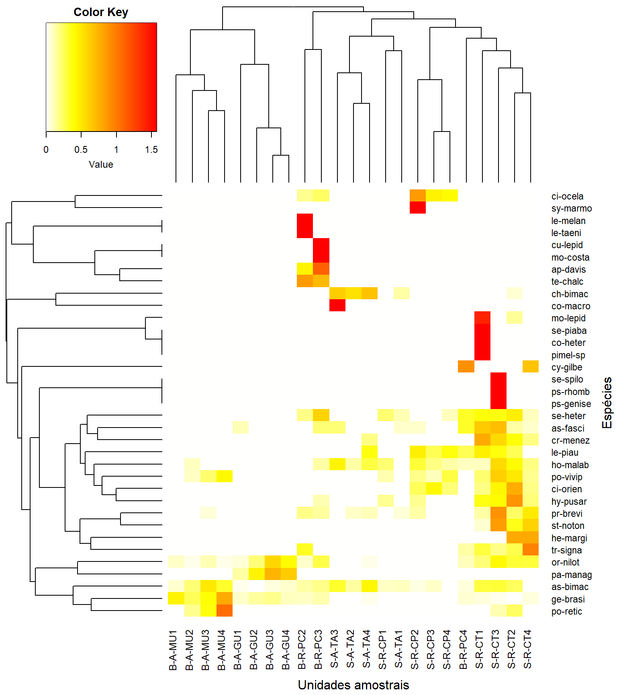
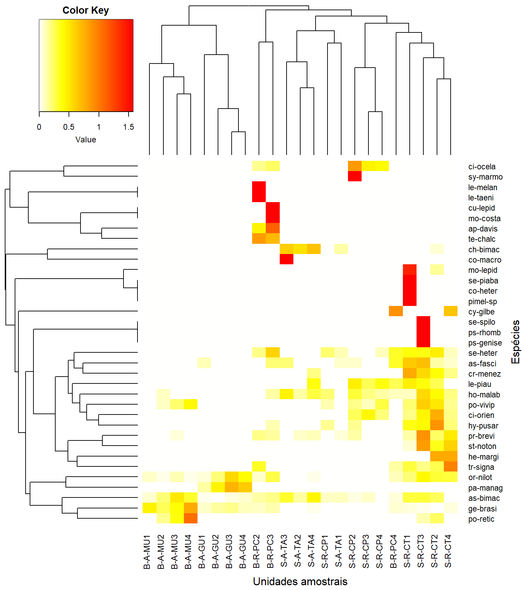
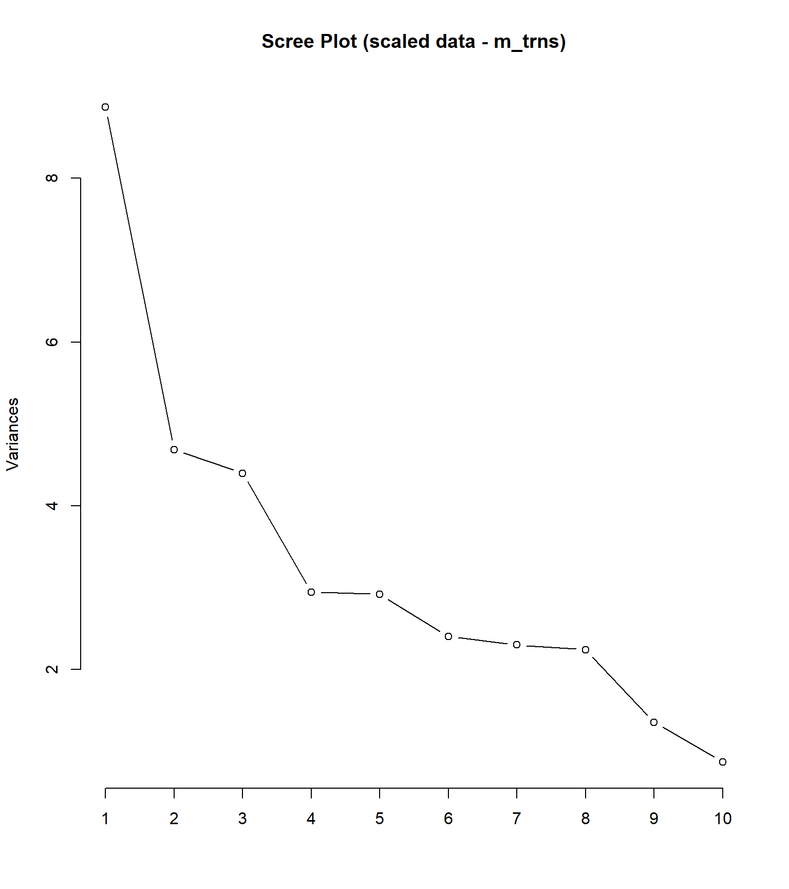
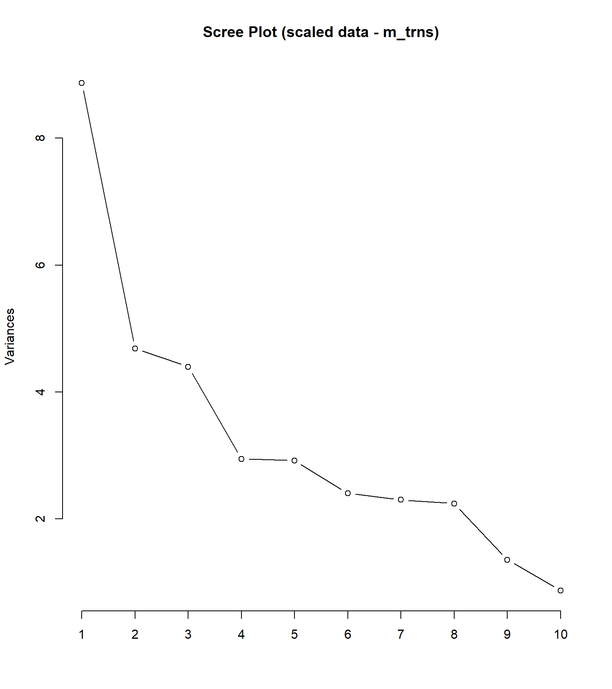

18 R Módulo 9 - Análise de Componentes Principais - PCA
RESUMO
Análise de Componentes Principais (PCA) é uma técnica poderosa para redução de dimensionalidade, extração de informações relevantes e visualização de dados complexos. Ela fornece uma representação compacta dos dados, preservando as principais tendências e padrões presentes nos mesmos
Apresentação
A Análise de Componentes Principais (PCA) é uma técnica estatística que é frequentemente usada para reduzir a dimensionalidade e extrair informações relevantes de conjuntos de dados complexos. Ela é amplamente utilizada em várias áreas, como ciência de dados, aprendizado de máquina e reconhecimento de padrões.
O objetivo da PCA é encontrar um novo conjunto de variáveis, chamadas de componentes principais, que são combinações lineares das variáveis originais. Essas combinações lineares são eixos ortogonais escolhidos de forma a maximizar a variância dos dados ao longo dos componentes principais sucessivos. Isso significa que os primeiros componentes principais capturam a maior parte da variabilidade dos dados, enquanto os componentes posteriores capturam cada vez menos.
Ao aplicar a PCA, a dimensionalidade do conjunto de dados pode ser reduzida, o que é útil quando há muitas variáveis e se deseja simplificar a análise. Além disso, a PCA também pode ser usada para visualizar os dados em um espaço de menor dimensão, permitindo a identificação de padrões, tendências e relacionamentos entre as observações. Um benefício adicional da PCA é a possibilidade de remover ruídos e redundâncias dos dados. Ao eliminar os componentes principais com menor variância, pode-se reduzir o impacto de pequenos erros de medição ou características menos relevantes do conjunto de dados.
18.2 Pacotes do módulo
Instalando os pacotes necessários para esse módulo
install.packages("tidyverse")
install.packages("openxlsx")
install.packages("vegan")
install.packages("gplots")
install.packages("psych")
install.packages("ggplot2")Os códigos acima, são usados para instalar os pacotes necessários para este módulo. O comando library() será usado para carregarmos esses pacote a medida que eles forem sendo necessários.
Para definir o diretório de trabalho usa-se os códigos abaixo. Lembre de usar a barra “/” entre os diretórios. E não a contra-barra “\”.
Alternativamente você pode ir na barra de tarefas e escolhes as opções:
SESSION -> SET WORKING DIRECTORY -> CHOOSE DIRECTORY
Usar o RStudio Cloud é uma opção para quem não quer instalar a versão para PC. 18
18.3 Sobre os dados do PPBio
A planilha ppbio contém os dados de abundância de espécies em diferentes unidades amostrais (UA’s). A base teórica dos dados do PPBio para o presente estudo pode ser vista em Base Teórica. Leia antes de prosseguir.
18.3.1 A planilha PPBio Habitat
Para esse módulo também usaremos a planilha ppbioh. Esta é uma matriz de dados ambiental, guardados na nO arquivo ppbio06h.xlsx, que traz os dados brutos de 26 localidades (UAs) em períodos diferentes (objetos) x 35 variáveis ambienteis (atributos) medidas em diferentes escalas espaciais, antes de qualquer modificação. As unidades de medição incluem cm, m, °C, mg/L, %, entre outros (dados publicados por (MEDEIROS; SILVA; RAMOS, 2008). Esses dados tem uma alta amplitude de variação, sugerido uso de matriz transformada e/ou reescalada. As bases teóricas dos dados do PPBio para o presente estudo pode ser vista em Base Teórica. Leia antes de prosseguir.
18.4 Importando a planilha de trabalho
Note que o sómbolo # em programação R significa que o texto que vem depois dele é um comentário e não será executado pelo programa. Isso é útil para explicar o código ou deixar anotações. Ajuste a segunda linha do código abaixo para refletir “C:/Seu/Diretório/De/Trabalho/Planilha.xlsx”.
library(openxlsx)
ppbio <- read.xlsx("D:/Elvio/OneDrive/Disciplinas/_EcoNumerica/5.Matrizes/ppbio06p-peixes.xlsx",
rowNames = T,
colNames = T,
sheet = "Sheet1")
ppbio_a <- read.xlsx("D:/Elvio/OneDrive/Disciplinas/_EcoNumerica/5.Matrizes/ppbio06p-amb.xlsx",
rowNames = T,
colNames = T,
sheet = "ano1")
str(ppbio)
ppbio_ma <- as.matrix(ppbio) #lê ppbio como uma matriz
str(ppbio_ma)
#ppbio
#ppbio_ma18.4.1 Outra forma de achar e importar uma planilha
getwd()
ppbio <- read.xlsx(file.choose(),
rowNames = T, colNames = T,
sheet = "Sheet1")18.5 Particionando as variáveis de interesse
Use o script abaixo apenas se for necessário escolher quais variáveis entrar na análise e particionar a matriz para as variáveis geomorfológicas da matriz ambiental m.variáveis.
#Lista as colunas
colnames(ppbio_a)
#Escolher quais colunas usar por nome
colnames(ppbio_a)[rev(order(colSums(ppbio_a)))] #ordena por maior soma
#Usar a função subset()
m_part <- subset(ppbio_a[, c("a.veloc", "a.temp", "a.do", "a.transp")]) #escolhe colunas por nome
m_part <- subset(ppbio_a[c("", "", "", ""),]) #escolhe linhas por nome
m_part <- subset(ppbio_a[, 18:26]) #escolhe as colunas de 18 a 26
m_part <- subset(ppbio_a, select = -c(a.veloc, a.temp, a.do, a.transp) #exclui colunas por nome
#m_part
#Escolhe as colunas que começam com a inicial "vari"
library(tidyverse)
vari <- "m."
m_part <- rename_with(select(ppbio_a, starts_with(vari)), ~ gsub("_", ".", .))18.6 REINÍCIO 1
m_trab <- (ppbio) # <1>
#m_trab <- (m_part) # <1>- Substitua a nova matriz aqui. Caso seja necessário.
No interesse de sistematizar o uso das várias matrizes que são comumente usadas em uma AMD, a tabela a seguir (Tabela @ref(tab:29m_) resume seus tipos e abreviações.
| Nome | Atributos (colunas) | Abreviação no R |
|---|---|---|
| Matriz comunitaria | Os atributos são táxons ou OTU’s (Unidades Taxonômicas Operacionais) (ex. espécies, gêneros, morfotipos) | m_com |
| Matriz ambiental | Os atributos são dados ambientais e variáveis físicas e químicas (ex. pH, condutividade, temperatura) | m_amb |
| Matriz de habitat | Os atributos são elementos da estrutura do habitat (ex. macróficas, algas, pedras, lama, etc) | m_hab |
| Matriz bruta | Os atributos ainda não receberam nenhum tipo de tratamento estatísco (valores brutos, como coletados) | m_brt |
| Matriz transposta | Os atributos foram transpostos para as linhas | m_t |
| Matriz relativizada | Os atributos foram relativizados por um critério de tamanho ou de variação (ex. dividir os valores de cada coluna pela soma) | m_rel |
| Matriz transformada | Foi aplicado um operador matemático a todos os atributos (ex. raiz quadrada, log) | m_trns |
| Matriz de trabalho | Qualquer matriz que seja o foco da análise atual (ex. comunitária, relativizada, etc) | m_trab |
18.7 Classificação
Para conhecermos os dados, vamos criar uma classificação baseada na distância Bray-Curtis e UPGMA como método de fusão, a partir da matriz de dados ppbioh relativizada pelo total das colunas e transformada pelo arco seno da raiz quadrada.
18.7.1 Dendrograma e Heatmap
Ao criar a matriz transformada m_trns verifique o tipo de relativização/transformação, ela deve ser específica para cada tipo de matriz, comunitária e ambiental.
#Dendrograma
library(vegan)
#relativização/transformação da matriz comunitária
m_trns <- asin(sqrt(decostand
(m_trab, method="total", MARGIN = 2)))
#transformação da matriz ambiental
#m_trns <- sqrt(m_trab)
vegdist <- vegdist(m_trns, method = "bray",
diag = TRUE,
upper = FALSE)
cluster_uas <- hclust(vegdist, method = "average")
plot (cluster_uas, main = "Cluster Dendrogram - Bray-Curtis",
hang = 0.1) #testar com -.01
rect.hclust(cluster_uas, k = 3, h = NULL)
#h = 0.8 fornece os grupos formados na altura h
as.matrix(vegdist)[1:6, 1:6]
#Heatmap
library("gplots")
heatdist <- as.matrix(vegdist)
col <- rev(heat.colors(999)) #rev() reverte as cores do heatmap
heatmap.2(x=(as.matrix(vegdist)), #objetos x objetos
Rowv = as.dendrogram(cluster_uas),
Colv = as.dendrogram(cluster_uas),
key = T, tracecol = NA, revC = T,
col = heat.colors, #dissimilaridade = 1 - similaridade
density.info = "none",
xlab = "UA´s", ylab = "UA´s",
mar = c(6, 6) + 0.2)
cluster_spp <- hclust((vegdist(t(m_trns), method = "bray",
diag = TRUE,
upper = FALSE)), method = "average")
plot (cluster_spp, main = "Dendrograma dos atributos")
heatmap.2(t(as.matrix(m_trns)), #objetos x atributos
Colv = as.dendrogram(cluster_uas),
Rowv = as.dendrogram(cluster_spp),
key = T, tracecol = NA, revC = T,
col = col,
density.info = "none",
xlab = "Unidades amostrais", ylab = "Espécies",
mar = c(6, 6) + 0.1) # adjust margin size## S-R-CT1 S-R-CP1 S-A-TA1 S-R-CT2 S-R-CP2 S-A-TA2
## S-R-CT1 0.0000000 0.8743721 0.9338269 0.6274997 0.8106894 0.9420728
## S-R-CP1 0.8743721 0.0000000 0.6833816 0.7759468 0.7726098 0.7342613
## S-A-TA1 0.9338269 0.6833816 0.0000000 0.8789631 0.9178304 0.5700984
## S-R-CT2 0.6274997 0.7759468 0.8789631 0.0000000 0.7280378 0.8836068
## S-R-CP2 0.8106894 0.7726098 0.9178304 0.7280378 0.0000000 0.8915271
## S-A-TA2 0.9420728 0.7342613 0.5700984 0.8836068 0.8915271 0.0000000

 

18.7.2 Histórico das fusões
Criamos agora o histórico das fusões dos objetos. Na tabela gerada, as duas primeiras colunas (No. e UA) representam o número (No.) atribuido a cada unidade amostral (UA). As duas colunas subsequentes (Cluster1 e Cluster2) representam o par de objetos (indicado pelo sinal de “-”) ou grupo de objetos (indicado pela ausência do sinall de “-”) que foram agrupadas. A coluna Height, indica o valor de similaridade na qual um dado par de objetos (ou grupo de objetos) foi agrupado. O valor aproximado de Height também pode ser visualizado no eixo do dendrograma. Por último, na coluna Histórico, é mostrada a sequência das fusões da primeira até a m-1 última fusão entre os dois últimos grupos. Nesse caso, 22.
library(gt)
merge <- as.data.frame(cluster_uas$merge)
merge[nrow(merge)+1,] = c("0","0")
height <- as.data.frame(round(cluster_uas$height, 2))
height[nrow(height)+1,] = c("1.0")
fusoes <- data.frame(Cluster_uas = merge, Height = height)
colnames(fusoes) <- c("Cluster1", "Cluster2", "Height")
UA <- rownames_to_column(as.data.frame(m_trns[, 0]))
colnames(UA) <- c("UAs")
No.UA <- 1:nrow(fusoes)
fusoes <- cbind(No.UA, UA, fusoes)
fusoes$Histórico <- 1:nrow(fusoes)
#fusoes
gt(fusoes)| No.UA | UAs | Cluster1 | Cluster2 | Height | Histórico |
|---|---|---|---|---|---|
| 1 | S-R-CT1 | -20 | -23 | 0.14 | 1 |
| 2 | S-R-CP1 | -8 | -11 | 0.26 | 2 |
| 3 | S-A-TA1 | -17 | 1 | 0.28 | 3 |
| 4 | S-R-CT2 | -19 | -22 | 0.37 | 4 |
| 5 | S-R-CP2 | -6 | -12 | 0.41 | 5 |
| 6 | S-A-TA2 | -4 | -10 | 0.46 | 6 |
| 7 | S-R-CT3 | -16 | 4 | 0.48 | 7 |
| 8 | S-R-CP3 | -5 | 2 | 0.53 | 8 |
| 9 | S-A-TA3 | -13 | 7 | 0.56 | 9 |
| 10 | S-R-CT4 | -9 | 5 | 0.57 | 10 |
| 11 | S-R-CP4 | -7 | 6 | 0.59 | 11 |
| 12 | S-A-TA4 | -14 | 3 | 0.61 | 12 |
| 13 | B-A-MU1 | -2 | -3 | 0.68 | 13 |
| 14 | B-A-GU1 | -1 | 11 | 0.68 | 14 |
| 15 | B-R-PC2 | -15 | -18 | 0.69 | 15 |
| 16 | B-A-MU2 | -21 | 14 | 0.75 | 16 |
| 17 | B-A-GU2 | 10 | 13 | 0.76 | 17 |
| 18 | B-R-PC3 | 9 | 12 | 0.79 | 18 |
| 19 | B-A-MU3 | 8 | 16 | 0.8 | 19 |
| 20 | B-A-GU3 | 17 | 19 | 0.85 | 20 |
| 21 | B-R-PC4 | 15 | 20 | 0.89 | 21 |
| 22 | B-A-MU4 | 18 | 21 | 0.91 | 22 |
| 23 | B-A-GU4 | 0 | 0 | 1.0 | 23 |
No código acima, h = 0.8 fornece os grupos formados na altura h do eixos das distâncias do dendrograma. Ou seja, no dendrograma, o eixo y (HEIGHT, “h”) representa o valor da distancia escolhida entre os objetos ou grupos de objetos. Portanto, se dois objetos ou grupos de objetos foram agrupados num dado valor (0.8, por exemplo) no eixo height, isso significa que a distancia entre esses objetos é 0.8.
18.8 Análise de Componentes Principais
## Standard deviations (1, .., p=23):
## [1] 1.580139e+02 1.173944e+02 9.732314e+01 8.011127e+01 5.690494e+01
## [6] 3.618527e+01 2.728016e+01 2.327454e+01 1.991894e+01 1.699349e+01
## [11] 1.663323e+01 1.048149e+01 8.560363e+00 7.066621e+00 5.711240e+00
## [16] 2.886118e+00 2.031480e+00 7.595588e-01 2.936262e-01 1.818256e-01
## [21] 3.663791e-02 2.110253e-03 9.577911e-15
##
## Rotation (n x k) = (35 x 23):
## PC1 PC2 PC3 PC4 PC5
## ap-davis -2.677996e-03 -6.991192e-04 -8.965937e-04 -2.343451e-03 -1.705698e-02
## as-bimac 8.017012e-01 -4.128304e-01 9.430628e-02 1.769079e-01 -3.729755e-01
## as-fasci 1.693654e-02 -1.821444e-02 1.123057e-01 -4.067229e-02 -9.993254e-03
## ch-bimac 1.550952e-01 -4.623440e-01 -2.688792e-01 1.128760e-01 8.053414e-01
## ci-ocela -1.209480e-02 2.401068e-03 -5.063953e-03 -2.668038e-02 -8.298238e-03
## ci-orien 4.882541e-03 -1.601925e-03 9.821368e-02 -5.481270e-02 2.617210e-02
## co-macro 4.132261e-04 -1.309473e-03 -7.936913e-04 3.007781e-04 2.539835e-03
## co-heter 9.931644e-05 -2.040095e-04 1.796556e-04 -9.695888e-05 -1.105721e-03
## cr-menez 3.844287e-03 -4.123061e-03 1.902215e-02 -6.305877e-03 -7.115421e-03
## cu-lepid -1.908729e-03 -6.057367e-04 -6.178816e-05 -8.932491e-04 -1.392754e-02
## cy-gilbe -2.583879e-02 5.923160e-03 -2.037307e-03 -3.927267e-02 -1.157465e-02
## ge-brasi 4.495955e-01 6.880207e-01 -2.946178e-01 9.954123e-02 1.530172e-01
## he-margi -1.084683e-04 5.431431e-05 1.078166e-03 -6.541842e-04 4.519585e-04
## ho-malab 1.191149e-02 -2.288031e-02 5.236499e-02 -2.383823e-02 5.960821e-02
## hy-pusar 6.094773e-03 -2.609191e-03 5.674812e-02 -2.504332e-02 8.285613e-03
## le-melan -2.713500e-04 -2.581513e-05 -3.327453e-04 -5.630667e-04 -9.864926e-04
## le-piau 4.933099e-04 -2.250338e-03 3.508005e-03 -3.650964e-03 -2.920097e-04
## le-taeni -1.356750e-04 -1.290756e-05 -1.663727e-04 -2.815333e-04 -4.932463e-04
## mo-costa -9.089187e-05 -2.884461e-05 -2.942293e-06 -4.253567e-05 -6.632160e-04
## mo-lepid 3.968570e-03 -7.969142e-03 7.860081e-03 -4.178416e-03 -4.288704e-02
## or-nilot -7.663762e-02 6.161634e-02 4.192337e-01 5.284656e-01 7.441173e-02
## pa-manag -1.357262e-01 8.859849e-02 1.098844e-01 7.450064e-01 3.256418e-02
## pimel-sp 5.958986e-04 -1.224057e-03 1.077933e-03 -5.817533e-04 -6.634328e-03
## po-retic 2.307306e-01 3.162677e-01 -8.235445e-02 1.163029e-02 1.620952e-01
## po-vivip 2.240554e-01 1.712543e-01 6.745288e-01 -2.823556e-01 3.174761e-01
## pr-brevi 2.637953e-02 -8.399793e-03 2.942681e-01 -9.695397e-02 1.358335e-01
## ps-rhomb 2.282813e-04 -4.507314e-05 1.654928e-03 -4.360267e-04 7.970039e-04
## ps-genise 2.282813e-04 -4.507314e-05 1.654928e-03 -4.360267e-04 7.970039e-04
## se-heter -1.586799e-03 -1.199029e-02 1.123622e-01 -6.935520e-02 -7.818616e-02
## se-piaba 6.753518e-03 -1.387265e-02 1.221658e-02 -6.593204e-03 -7.518905e-02
## se-spilo 2.282813e-04 -4.507314e-05 1.654928e-03 -4.360267e-04 7.970039e-04
## st-noton 1.569577e-02 -1.413275e-03 2.262120e-01 -7.662405e-02 1.102675e-01
## sy-marmo -1.826947e-04 3.929503e-05 -8.461342e-05 -4.023105e-04 -7.825343e-05
## te-chalc -1.558303e-02 -2.653962e-03 -1.281498e-02 -2.386360e-02 -7.595325e-02
## tr-signa -2.780076e-02 5.109641e-03 5.481514e-02 -5.479263e-02 7.205337e-03
## PC6 PC7 PC8 PC9 PC10
## ap-davis 5.747879e-03 -0.1411264218 0.0558249509 0.0601921950 1.630077e-02
## as-bimac 3.458392e-02 0.0491906461 -0.0250126748 0.0458316784 -4.881785e-03
## as-fasci 2.609813e-02 -0.0540373517 0.2134907933 -0.5251337058 1.716953e-01
## ch-bimac 1.599201e-02 -0.1304168070 0.0081347532 -0.0526838452 -2.059487e-02
## ci-ocela -5.451086e-02 0.0491022816 -0.0164460743 0.0583494749 6.085292e-02
## ci-orien -1.278299e-01 -0.0517140860 -0.2959174438 0.1157917320 -2.217519e-01
## co-macro -5.491964e-06 -0.0005399856 0.0001785373 -0.0008428680 7.873604e-05
## co-heter -8.477047e-06 -0.0013066049 -0.0007831078 -0.0083412062 3.823092e-03
## cr-menez -1.036594e-07 -0.0152759144 -0.0006263837 -0.1108485457 4.389448e-02
## cu-lepid 3.269556e-03 -0.1271040647 0.0471377741 0.0373568189 -1.151048e-02
## cy-gilbe 3.003104e-01 -0.0238003214 -0.2360337115 -0.2138260683 -3.763841e-01
## ge-brasi 1.206569e-01 -0.0346826009 0.2349154598 -0.0494014554 -2.575579e-01
## he-margi 3.203651e-03 -0.0010580469 -0.0082142941 0.0029504025 -3.894884e-03
## ho-malab -1.661982e-02 0.0110423015 0.0297983317 0.0231377009 -3.211064e-02
## hy-pusar -6.514597e-02 -0.0745355547 -0.1938354558 0.0120044033 -1.281926e-01
## le-melan 9.290522e-04 -0.0031879130 0.0025770084 0.0084225920 1.134375e-02
## le-piau -6.053385e-03 0.0030794031 -0.0038076597 -0.0220530269 8.444017e-03
## le-taeni 4.645261e-04 -0.0015939565 0.0012885042 0.0042112960 5.671873e-03
## mo-costa 1.556931e-04 -0.0060525745 0.0022446559 0.0017788961 -5.481180e-04
## mo-lepid -2.209727e-03 -0.0527036320 -0.0358275453 -0.3233139472 1.450358e-01
## or-nilot 2.027643e-01 -0.3089283375 0.0473009474 -0.0162159927 -1.946308e-01
## pa-manag -1.659167e-01 0.2111266988 -0.0890189061 0.0114493662 1.705577e-01
## pimel-sp -5.086228e-05 -0.0078396295 -0.0046986467 -0.0500472374 2.293855e-02
## po-retic -2.561159e-02 -0.1310391226 -0.3955084723 0.0099306329 5.388691e-01
## po-vivip -3.159739e-01 0.0850376686 -0.1576149719 0.0366669781 1.676773e-03
## pr-brevi 3.200242e-01 0.1570716178 0.4781978982 0.0259118245 1.587914e-01
## ps-rhomb 2.874215e-04 0.0011697262 0.0043303329 -0.0004480707 8.472019e-04
## ps-genise 2.874215e-04 0.0011697262 0.0043303329 -0.0004480707 8.472019e-04
## se-heter -6.391385e-02 -0.6984719023 -0.0076474844 -0.1166124978 -1.887971e-01
## se-piaba -5.764392e-04 -0.0888491339 -0.0532513287 -0.5672020244 2.599703e-01
## se-spilo 2.874215e-04 0.0011697262 0.0043303329 -0.0004480707 8.472019e-04
## st-noton 3.113644e-01 0.1335924881 0.1776577023 0.0512256753 1.050433e-02
## sy-marmo -8.257423e-04 0.0012481609 -0.0002598481 0.0006785948 1.041431e-03
## te-chalc 4.433418e-02 -0.4721900169 0.2281163604 0.4232344711 3.992715e-01
## tr-signa 7.033077e-01 0.0159506042 -0.4507108498 0.0955352069 1.491738e-01
## PC11 PC12 PC13 PC14 PC15
## ap-davis -0.0184553990 0.0776046642 0.0749429383 -0.1168020317 0.0790303145
## as-bimac -0.0300740997 0.0023793271 0.0020776546 -0.0150980593 -0.0054162457
## as-fasci -0.0674143959 -0.1087620383 -0.0912981412 -0.0213500629 -0.1810832749
## ch-bimac 0.0417460287 -0.0519231998 -0.0197828264 -0.0267813655 0.0238740750
## ci-ocela 0.0128783329 0.3121339305 -0.5952072080 -0.6784391061 0.0814485471
## ci-orien 0.2169892747 -0.0796787774 -0.0795730923 -0.0933271830 -0.7572121312
## co-macro 0.0002001520 -0.0005488835 -0.0017082489 -0.0028870206 -0.0049803194
## co-heter 0.0039790922 -0.0017327593 -0.0014481204 -0.0002229518 -0.0001782463
## cr-menez 0.0536870908 -0.0346147093 -0.0077242288 -0.0026323484 -0.0366525241
## cu-lepid -0.0192556243 0.1286300817 0.1094127330 -0.1394917698 0.0960870883
## cy-gilbe -0.6750894802 -0.3221057903 -0.2654178257 -0.0095993430 0.0037291571
## ge-brasi 0.1899811583 -0.1386335963 -0.0263919885 -0.0918341398 0.0075135310
## he-margi 0.0050196638 -0.0018473078 0.0038445664 -0.0014359141 -0.0023117775
## ho-malab -0.0062073149 0.0551002450 -0.0770206328 -0.1777240324 -0.1745654834
## hy-pusar 0.1559303129 -0.1352201837 0.0652120472 -0.0013400087 -0.2201788849
## le-melan 0.0006868639 -0.0228602638 -0.0158719699 0.0117328813 -0.0086529398
## le-piau 0.0023895609 0.0073147219 -0.0550367638 -0.0510962716 0.0267686347
## le-taeni 0.0003434320 -0.0114301319 -0.0079359850 0.0058664407 -0.0043264699
## mo-costa -0.0009169345 0.0061252420 0.0052101301 -0.0066424652 0.0045755756
## mo-lepid 0.1584135512 -0.0712036084 -0.0547234439 -0.0078892707 -0.0120334819
## or-nilot 0.1295203828 0.3325824118 -0.3159531837 0.3530933921 0.0213976904
## pa-manag -0.1255398750 -0.3204147782 0.2414887778 -0.3446069205 -0.0110668995
## pimel-sp 0.0238745533 -0.0103965560 -0.0086887224 -0.0013377109 -0.0010694776
## po-retic -0.3828544593 0.3691269151 0.0580951820 0.1452872911 -0.1952113443
## po-vivip 0.0269013619 -0.2198091979 -0.0437320102 -0.0039910271 0.3076510426
## pr-brevi -0.1638071209 0.0756696929 0.1168351489 -0.1341847586 -0.2658935778
## ps-rhomb -0.0020432922 0.0003759334 0.0004583116 0.0002882704 -0.0021843381
## ps-genise -0.0020432922 0.0003759334 0.0004583116 0.0002882704 -0.0021843381
## se-heter -0.1016001573 0.0954412824 0.4310314784 -0.3619456413 0.0713499273
## se-piaba 0.2705782708 -0.1178276342 -0.0984721873 -0.0151607235 -0.0121207460
## se-spilo -0.0020432922 0.0003759334 0.0004583116 0.0002882704 -0.0021843381
## st-noton -0.0356702545 0.0646856738 0.2289331416 -0.0903985176 -0.2011376630
## sy-marmo 0.0001405891 0.0066708268 -0.0131566533 -0.0171056453 0.0016910489
## te-chalc -0.0270813721 -0.5134259897 -0.3009473085 0.0605865071 -0.0634283255
## tr-signa 0.3283846054 -0.1153445147 0.0975177019 -0.1660069310 0.1896927418
## PC16 PC17 PC18 PC19 PC20
## ap-davis 0.1027900660 0.2405865030 0.3504077600 -0.2193026939 -0.287365846
## as-bimac 0.0009944375 -0.0003535457 0.0006659144 0.0014014159 0.001258845
## as-fasci -0.1762749174 0.2084786820 0.4876927223 0.1006826053 0.487129961
## ch-bimac 0.0416015974 -0.0048042368 0.0042054207 0.0089402853 0.005422511
## ci-ocela 0.0964266863 -0.1732170002 0.0665951773 0.0868906586 0.032484331
## ci-orien 0.2758930389 0.3035357720 -0.0539671769 0.0364566444 0.037602504
## co-macro -0.0974186207 0.0788340068 0.1166195114 0.1868080050 -0.014132739
## co-heter 0.0018039689 -0.0006804530 -0.0034373430 -0.0004036606 -0.005880177
## cr-menez 0.0370970493 -0.0784818331 -0.0859221178 -0.3850403202 0.083629766
## cu-lepid 0.1197005224 0.2780399142 0.4040679475 -0.2515065839 -0.328203261
## cy-gilbe 0.0582411935 -0.0071264901 -0.0283293005 -0.0499585236 -0.160514808
## ge-brasi 0.0029004513 0.0076792479 -0.0057516329 0.0042312148 0.005349544
## he-margi -0.0039233304 -0.0111834525 0.0199042487 -0.0090510313 0.001514489
## ho-malab -0.8544034134 0.2337333204 -0.2443426965 -0.1293882371 -0.206783113
## hy-pusar -0.2275657378 -0.7478089874 0.4062480495 -0.1213731434 -0.085982818
## le-melan -0.0090441925 -0.0202773629 -0.0291606073 0.0176721576 0.022586456
## le-piau 0.0704058762 -0.0090227832 -0.1812664418 -0.7769560785 0.381335312
## le-taeni -0.0045220962 -0.0101386814 -0.0145803037 0.0088360788 0.011293228
## mo-costa 0.0057000249 0.0132399959 0.0192413308 -0.0119765040 -0.015628727
## mo-lepid 0.0659865662 -0.0419112055 -0.1154104199 -0.0248062636 -0.228084202
## or-nilot -0.0162856719 -0.0117555877 0.0019919202 -0.0065101752 -0.005674463
## pa-manag 0.0158771077 0.0163433464 -0.0052873292 0.0087158062 0.008167607
## pimel-sp 0.0108238131 -0.0040827181 -0.0206240580 -0.0024219636 -0.035281063
## po-retic -0.0173765377 -0.0527300395 0.0057253203 -0.0136438507 -0.004085891
## po-vivip 0.0212029766 0.0722959367 0.0019058361 0.0114082273 -0.006556515
## pr-brevi 0.1734715315 -0.1976962882 -0.2255878632 0.0735364603 0.002421692
## ps-rhomb 0.0007429851 0.0006469279 -0.0034264576 0.0006969712 -0.002644040
## ps-genise 0.0007429851 0.0006469279 -0.0034264576 0.0006969712 -0.002644040
## se-heter 0.0026535545 -0.0745842780 -0.2105600063 0.1219485063 0.150358281
## se-piaba 0.1226698823 -0.0462708051 -0.2337393243 -0.0274489213 -0.399852047
## se-spilo 0.0007429851 0.0006469279 -0.0034264576 0.0006969712 -0.002644040
## st-noton 0.0065146546 -0.0424567234 0.1491996117 -0.1460414830 -0.261483091
## sy-marmo -0.0088693444 -0.0371670961 0.0214315598 0.0083531005 -0.005428304
## te-chalc -0.0130778721 -0.0026200254 0.0078941097 -0.0230952425 -0.048180805
## tr-signa -0.0673522307 0.1085918277 0.0313982144 0.0641504152 0.183756837
## PC21 PC22 PC23
## ap-davis -7.857388e-02 0.1890705323 -7.319527e-01
## as-bimac 7.876731e-04 -0.0014385684 1.067981e-04
## as-fasci 1.121466e-01 0.0109905100 -3.405969e-03
## ch-bimac 3.476181e-03 -0.0051527896 7.258133e-04
## ci-ocela 5.132144e-02 -0.0898260097 2.002155e-02
## ci-orien -1.553685e-02 0.0339935662 -4.463220e-03
## co-macro -8.712711e-01 -0.3654391372 5.815717e-02
## co-heter -2.335142e-05 0.0001951877 2.380887e-02
## cr-menez -8.889201e-02 0.2129092465 2.617195e-01
## cu-lepid -9.362665e-02 0.2244324236 5.794838e-01
## cy-gilbe -2.781086e-02 0.0203220573 -1.313159e-03
## ge-brasi 7.587392e-04 0.0002149985 -4.914514e-05
## he-margi -7.173086e-02 -0.1484307281 -2.364817e-02
## ho-malab 3.896676e-03 0.1119924469 -1.489550e-02
## hy-pusar -7.757736e-02 0.1236944821 -3.790744e-02
## le-melan 7.804472e-03 -0.0184196599 -4.514325e-02
## le-piau -1.570153e-01 -0.1988989479 -1.037844e-01
## le-taeni 3.902236e-03 -0.0092098299 -2.041830e-02
## mo-costa -4.458412e-03 0.0106872583 3.954910e-02
## mo-lepid -7.955716e-02 -0.1603119866 -1.494323e-01
## or-nilot -9.168034e-04 -0.0002007340 5.881938e-05
## pa-manag 1.353169e-03 0.0003078364 -8.519846e-05
## pimel-sp -1.401085e-04 0.0011711259 3.001862e-03
## po-retic -8.469947e-04 -0.0081744718 -7.800404e-05
## po-vivip -1.231887e-03 0.0148843924 7.916871e-05
## pr-brevi -2.478972e-01 0.3911506220 -5.600978e-02
## ps-rhomb 1.592150e-02 0.0200212955 1.362948e-02
## ps-genise 1.592150e-02 0.0200212955 1.362948e-02
## se-heter 2.361627e-02 -0.0700011221 9.955185e-03
## se-piaba -1.587896e-03 0.0132727605 4.310644e-02
## se-spilo 1.592150e-02 0.0200212955 1.362948e-02
## st-noton 3.073853e-01 -0.6478745318 7.030906e-02
## sy-marmo -1.859027e-02 0.1035737330 4.811447e-02
## te-chalc 3.798206e-02 -0.0800860952 5.684797e-02
## tr-signa -2.226556e-02 0.1144374076 -8.599444e-03
## Importance of components:
## PC1 PC2 PC3 PC4 PC5 PC6
## Standard deviation 158.0139 117.3944 97.3231 80.1113 56.90494 36.18527
## Proportion of Variance 0.4046 0.2233 0.1535 0.1040 0.05247 0.02122
## Cumulative Proportion 0.4046 0.6279 0.7814 0.8854 0.93784 0.95905
## PC7 PC8 PC9 PC10 PC11 PC12
## Standard deviation 27.28016 23.27454 19.91894 16.99349 16.63323 10.48149
## Proportion of Variance 0.01206 0.00878 0.00643 0.00468 0.00448 0.00178
## Cumulative Proportion 0.97111 0.97989 0.98632 0.99100 0.99548 0.99726
## PC13 PC14 PC15 PC16 PC17 PC18 PC19
## Standard deviation 8.56036 7.06662 5.71124 2.88612 2.03148 0.75956 0.2936
## Proportion of Variance 0.00119 0.00081 0.00053 0.00013 0.00007 0.00001 0.0000
## Cumulative Proportion 0.99845 0.99926 0.99979 0.99992 0.99999 1.00000 1.0000
## PC20 PC21 PC22 PC23
## Standard deviation 0.1818 0.03664 0.00211 9.578e-15
## Proportion of Variance 0.0000 0.00000 0.00000 0.000e+00
## Cumulative Proportion 1.0000 1.00000 1.00000 1.000e+00Uma PCA sempre retorna n componentes principais (PCs), onde n é o número de objetos da n x m matrix de dados.
18.8.1 Subsetting as variáveis para a PCA
Para escolher quais variáveis entrar na PCA podemos:
#Remover a primeira coluna
pca_part1 <- prcomp(m_trns[,-1])
#Usar apenas as 5 primeiras colunas
colnames(m_trns) #lista as colunas
pca_part2 <- prcomp(m_trns[,1:5])
#Escolher quais colunas usar por nome
colnames(m_trns)[rev(order(colSums(m_trns)))] #ordena por maior soma
pca_part3 <- prcomp(~as-bimac + ge-brasi, data = m_trns) #usa apenas as colunas listadas
#"-" deve ser substituido, o R não o reconhece como texto
#Usar a função subset()
pca_part4 <- subset(m_trns[,1:5])
prcomp(pca_part4, scale = TRUE)Continuando …
18.8.2 Explorando correlações multivariadas
#attach(m_trns)
plot(m_trns$"as-bimac", m_trns$"ge-brasi")
#plot(scale(m_trns$"m.elev"), scale(m_trns$"m.river"))
plot((m_trns$"as-bimac" - mean(m_trns$"as-bimac")) / sd(m_trns$"as-bimac"))
#plot((m_trns$"m.elev" - mean(m_trns$"m.elev")) / sd(m_trns$"m.elev"))
library(psych)
pairs.panels(m_trns[,1:6],
method = "pearson", # correlation method
scale = FALSE, lm = FALSE,
hist.col = "#00AFBB", pch = 19,
density = TRUE, # show density plots
ellipses = TRUE, # show correlation ellipses
alpha = 0.5
)
#Ordem pela soma das colunas
# Passo 1
col_sums <- colSums(m_trns)
# Passo 2
ordered_indices <- order(col_sums, decreasing = TRUE)
# Passo 3
ordered <- m_trns[, ordered_indices]
ordered## as-bimac ho-malab or-nilot po-vivip se-heter ge-brasi
## S-R-CT1 0.29580113 0.09592969 0.20878001 0.22101460 0.3764349 0.05425923
## S-R-CP1 0.09135411 0.21584866 0.00000000 0.12416313 0.2192313 0.00000000
## S-A-TA1 0.10054093 0.00000000 0.00000000 0.00000000 0.1165111 0.00000000
## S-R-CT2 0.25205752 0.40598283 0.30797141 0.49537824 0.4670175 0.00000000
## S-R-CP2 0.04681561 0.30772498 0.00000000 0.18188749 0.0000000 0.00000000
## S-A-TA2 0.14242797 0.13587479 0.00000000 0.00000000 0.0000000 0.00000000
## S-R-CT3 0.30509802 0.56249105 0.41785958 0.61547971 0.3664456 0.03131633
## S-R-CP3 0.08381382 0.19275669 0.00000000 0.10129161 0.0000000 0.00000000
## S-A-TA3 0.32588896 0.44266923 0.00000000 0.00000000 0.0000000 0.00000000
## S-R-CT4 0.00000000 0.19275669 0.29961011 0.17002156 0.1008442 0.05425923
## S-R-CP4 0.00000000 0.13587479 0.00000000 0.29005641 0.1008442 0.00000000
## S-A-TA4 0.42841263 0.29145679 0.03455130 0.00000000 0.0000000 0.03131633
## B-A-MU1 0.07256361 0.00000000 0.08471752 0.00000000 0.0000000 0.44626053
## B-A-GU1 0.02960230 0.00000000 0.05986846 0.00000000 0.0000000 0.08293673
## B-R-PC2 0.13927667 0.00000000 0.07732071 0.00000000 0.1848546 0.08867767
## B-A-MU2 0.20977540 0.09592969 0.03455130 0.09056689 0.0000000 0.25918549
## B-A-GU2 0.00000000 0.00000000 0.20878001 0.00000000 0.0000000 0.15073345
## B-R-PC3 0.18225721 0.13587479 0.28223829 0.00000000 0.5950206 0.12557463
## B-A-MU3 0.49281178 0.00000000 0.11482305 0.22339293 0.0000000 0.38659505
## B-A-GU3 0.05128768 0.00000000 0.57389635 0.00000000 0.0000000 0.17806243
## B-R-PC4 0.05540108 0.09592969 0.10381968 0.00000000 0.3295526 0.07007133
## B-A-MU4 0.32661037 0.00000000 0.03455130 0.42053434 0.0000000 0.78441777
## B-A-GU4 0.07553213 0.00000000 0.40318427 0.00000000 0.0000000 0.09917726
## le-piau as-fasci pr-brevi ci-orien hy-pusar tr-signa ci-ocela
## S-R-CT1 0.4636476 0.63106017 0.13650631 0.1880966 0.3640209 0.2985914 0.0000000
## S-R-CP1 0.0000000 0.00000000 0.00000000 0.0000000 0.1686344 0.0000000 0.0000000
## S-A-TA1 0.0000000 0.07963989 0.06089569 0.0000000 0.0000000 0.0000000 0.0000000
## S-R-CT2 0.2611574 0.13823439 0.23794112 0.7679121 0.8918340 0.2718802 0.0000000
## S-R-CP2 0.4636476 0.07963989 0.13650631 0.2535816 0.1686344 0.0000000 0.8570719
## S-A-TA2 0.0000000 0.00000000 0.08617291 0.0000000 0.0000000 0.0000000 0.0000000
## S-R-CT3 0.3737922 0.68988155 0.89364927 0.4313758 0.4045563 0.1844947 0.0000000
## S-R-CP3 0.2611574 0.00000000 0.00000000 0.4220958 0.0000000 0.0000000 0.4455406
## S-A-TA3 0.0000000 0.21207071 0.00000000 0.0000000 0.0000000 0.0000000 0.0000000
## S-R-CT4 0.0000000 0.07963989 0.48641493 0.1880966 0.2070324 0.9672667 0.0000000
## S-R-CP4 0.3737922 0.00000000 0.00000000 0.2062968 0.0000000 0.0000000 0.4076059
## S-A-TA4 0.3737922 0.00000000 0.10560544 0.0000000 0.0000000 0.0000000 0.0000000
## B-A-MU1 0.0000000 0.00000000 0.00000000 0.0000000 0.0000000 0.0000000 0.0000000
## B-A-GU1 0.0000000 0.11274751 0.00000000 0.0000000 0.0000000 0.0000000 0.0000000
## B-R-PC2 0.0000000 0.00000000 0.18360401 0.0000000 0.0000000 0.3389861 0.1698463
## B-A-MU2 0.0000000 0.00000000 0.00000000 0.0000000 0.0000000 0.0000000 0.0000000
## B-A-GU2 0.0000000 0.00000000 0.00000000 0.0000000 0.0000000 0.0000000 0.0000000
## B-R-PC3 0.0000000 0.21207071 0.14962891 0.0000000 0.1189585 0.0000000 0.2413830
## B-A-MU3 0.0000000 0.00000000 0.06089569 0.0000000 0.0000000 0.0000000 0.0000000
## B-A-GU3 0.0000000 0.00000000 0.00000000 0.0000000 0.0000000 0.0000000 0.0000000
## B-R-PC4 0.2611574 0.33420332 0.00000000 0.0000000 0.0000000 0.1391234 0.0000000
## B-A-MU4 0.0000000 0.00000000 0.00000000 0.0000000 0.0000000 0.0000000 0.0000000
## B-A-GU4 0.0000000 0.00000000 0.00000000 0.0000000 0.0000000 0.0000000 0.0000000
## cr-menez ch-bimac po-retic pa-manag st-noton he-margi ap-davis
## S-R-CT1 0.7853982 0.00000000 0.0000000 0.0000000 0.06989994 0.0000000 0.000000
## S-R-CP1 0.0000000 0.00000000 0.0000000 0.0000000 0.00000000 0.0000000 0.000000
## S-A-TA1 0.0000000 0.13621375 0.0000000 0.0000000 0.00000000 0.0000000 0.000000
## S-R-CT2 0.3875967 0.06527916 0.2424450 0.0000000 0.35673339 0.7853982 0.000000
## S-R-CP2 0.0000000 0.00000000 0.0000000 0.0000000 0.00000000 0.0000000 0.000000
## S-A-TA2 0.0000000 0.52646034 0.0000000 0.0000000 0.00000000 0.0000000 0.000000
## S-R-CT3 0.5639426 0.00000000 0.1203286 0.0000000 0.84652593 0.0000000 0.000000
## S-R-CP3 0.0000000 0.00000000 0.0000000 0.0000000 0.00000000 0.0000000 0.000000
## S-A-TA3 0.0000000 0.61998604 0.0000000 0.0000000 0.00000000 0.0000000 0.000000
## S-R-CT4 0.1901256 0.00000000 0.0000000 0.0000000 0.59287085 0.7853982 0.000000
## S-R-CP4 0.0000000 0.00000000 0.0000000 0.0000000 0.00000000 0.0000000 0.000000
## S-A-TA4 0.1901256 0.67165367 0.0000000 0.0000000 0.00000000 0.0000000 0.000000
## B-A-MU1 0.0000000 0.00000000 0.0000000 0.0000000 0.00000000 0.0000000 0.000000
## B-A-GU1 0.0000000 0.00000000 0.0000000 0.1415090 0.00000000 0.0000000 0.000000
## B-R-PC2 0.0000000 0.00000000 0.0000000 0.0000000 0.00000000 0.0000000 0.444860
## B-A-MU2 0.0000000 0.00000000 0.1705861 0.0000000 0.00000000 0.0000000 0.000000
## B-A-GU2 0.0000000 0.00000000 0.0000000 0.4439109 0.00000000 0.0000000 0.000000
## B-R-PC3 0.0000000 0.00000000 0.0000000 0.0000000 0.00000000 0.0000000 1.125936
## B-A-MU3 0.0000000 0.00000000 0.3726604 0.0000000 0.00000000 0.0000000 0.000000
## B-A-GU3 0.0000000 0.00000000 0.0000000 0.7374041 0.00000000 0.0000000 0.000000
## B-R-PC4 0.0000000 0.00000000 0.0000000 0.0000000 0.00000000 0.0000000 0.000000
## B-A-MU4 0.0000000 0.00000000 1.0665527 0.0000000 0.00000000 0.0000000 0.000000
## B-A-GU4 0.0000000 0.00000000 0.0000000 0.6263078 0.00000000 0.0000000 0.000000
## co-macro co-heter cu-lepid cy-gilbe le-melan le-taeni mo-costa
## S-R-CT1 0.000000 1.570796 0.000000 0.0000000 0.000000 0.000000 0.000000
## S-R-CP1 0.000000 0.000000 0.000000 0.0000000 0.000000 0.000000 0.000000
## S-A-TA1 0.000000 0.000000 0.000000 0.0000000 0.000000 0.000000 0.000000
## S-R-CT2 0.000000 0.000000 0.000000 0.0000000 0.000000 0.000000 0.000000
## S-R-CP2 0.000000 0.000000 0.000000 0.0000000 0.000000 0.000000 0.000000
## S-A-TA2 0.000000 0.000000 0.000000 0.0000000 0.000000 0.000000 0.000000
## S-R-CT3 0.000000 0.000000 0.000000 0.0000000 0.000000 0.000000 0.000000
## S-R-CP3 0.000000 0.000000 0.000000 0.0000000 0.000000 0.000000 0.000000
## S-A-TA3 1.570796 0.000000 0.000000 0.0000000 0.000000 0.000000 0.000000
## S-R-CT4 0.000000 0.000000 0.000000 0.6659445 0.000000 0.000000 0.000000
## S-R-CP4 0.000000 0.000000 0.000000 0.0000000 0.000000 0.000000 0.000000
## S-A-TA4 0.000000 0.000000 0.000000 0.0000000 0.000000 0.000000 0.000000
## B-A-MU1 0.000000 0.000000 0.000000 0.0000000 0.000000 0.000000 0.000000
## B-A-GU1 0.000000 0.000000 0.000000 0.0000000 0.000000 0.000000 0.000000
## B-R-PC2 0.000000 0.000000 0.000000 0.0000000 1.570796 1.570796 0.000000
## B-A-MU2 0.000000 0.000000 0.000000 0.0000000 0.000000 0.000000 0.000000
## B-A-GU2 0.000000 0.000000 0.000000 0.0000000 0.000000 0.000000 0.000000
## B-R-PC3 0.000000 0.000000 1.570796 0.0000000 0.000000 0.000000 1.570796
## B-A-MU3 0.000000 0.000000 0.000000 0.0000000 0.000000 0.000000 0.000000
## B-A-GU3 0.000000 0.000000 0.000000 0.0000000 0.000000 0.000000 0.000000
## B-R-PC4 0.000000 0.000000 0.000000 0.9048519 0.000000 0.000000 0.000000
## B-A-MU4 0.000000 0.000000 0.000000 0.0000000 0.000000 0.000000 0.000000
## B-A-GU4 0.000000 0.000000 0.000000 0.0000000 0.000000 0.000000 0.000000
## pimel-sp ps-rhomb ps-genise se-piaba se-spilo sy-marmo te-chalc
## S-R-CT1 1.570796 0.000000 0.000000 1.570796 0.000000 0.000000 0.0000000
## S-R-CP1 0.000000 0.000000 0.000000 0.000000 0.000000 0.000000 0.0000000
## S-A-TA1 0.000000 0.000000 0.000000 0.000000 0.000000 0.000000 0.0000000
## S-R-CT2 0.000000 0.000000 0.000000 0.000000 0.000000 0.000000 0.0000000
## S-R-CP2 0.000000 0.000000 0.000000 0.000000 0.000000 1.570796 0.0000000
## S-A-TA2 0.000000 0.000000 0.000000 0.000000 0.000000 0.000000 0.0000000
## S-R-CT3 0.000000 1.570796 1.570796 0.000000 1.570796 0.000000 0.0000000
## S-R-CP3 0.000000 0.000000 0.000000 0.000000 0.000000 0.000000 0.0000000
## S-A-TA3 0.000000 0.000000 0.000000 0.000000 0.000000 0.000000 0.0000000
## S-R-CT4 0.000000 0.000000 0.000000 0.000000 0.000000 0.000000 0.0000000
## S-R-CP4 0.000000 0.000000 0.000000 0.000000 0.000000 0.000000 0.0000000
## S-A-TA4 0.000000 0.000000 0.000000 0.000000 0.000000 0.000000 0.0000000
## B-A-MU1 0.000000 0.000000 0.000000 0.000000 0.000000 0.000000 0.0000000
## B-A-GU1 0.000000 0.000000 0.000000 0.000000 0.000000 0.000000 0.0000000
## B-R-PC2 0.000000 0.000000 0.000000 0.000000 0.000000 0.000000 0.8527660
## B-A-MU2 0.000000 0.000000 0.000000 0.000000 0.000000 0.000000 0.0000000
## B-A-GU2 0.000000 0.000000 0.000000 0.000000 0.000000 0.000000 0.0000000
## B-R-PC3 0.000000 0.000000 0.000000 0.000000 0.000000 0.000000 0.7180303
## B-A-MU3 0.000000 0.000000 0.000000 0.000000 0.000000 0.000000 0.0000000
## B-A-GU3 0.000000 0.000000 0.000000 0.000000 0.000000 0.000000 0.0000000
## B-R-PC4 0.000000 0.000000 0.000000 0.000000 0.000000 0.000000 0.0000000
## B-A-MU4 0.000000 0.000000 0.000000 0.000000 0.000000 0.000000 0.0000000
## B-A-GU4 0.000000 0.000000 0.000000 0.000000 0.000000 0.000000 0.0000000
## mo-lepid
## S-R-CT1 1.4120161
## S-R-CP1 0.0000000
## S-A-TA1 0.0000000
## S-R-CT2 0.1587802
## S-R-CP2 0.0000000
## S-A-TA2 0.0000000
## S-R-CT3 0.0000000
## S-R-CP3 0.0000000
## S-A-TA3 0.0000000
## S-R-CT4 0.0000000
## S-R-CP4 0.0000000
## S-A-TA4 0.0000000
## B-A-MU1 0.0000000
## B-A-GU1 0.0000000
## B-R-PC2 0.0000000
## B-A-MU2 0.0000000
## B-A-GU2 0.0000000
## B-R-PC3 0.0000000
## B-A-MU3 0.0000000
## B-A-GU3 0.0000000
## B-R-PC4 0.0000000
## B-A-MU4 0.0000000
## B-A-GU4 0.0000000Note que, no R, escalar os dados (argumento scale=TRUE) já significa centrar (argumento center=TRUE) e escalar, uma vez que no ambiente de programação do R base, ao escalar os dados são primeiro centrados (argumento center=TRUE como o padrão) (mas veja também a Tabela 18.1).
Nos argumentos da função prcomp():
center, um valor lógico (TRUE, FALSE) indicando se as variáveis devem ser deslocadas para serem centradas em zero. O valor é passado para a função “scale”.scale, um valor lógico (TRUE, FALSE) indicando se as variáveis devem ser escaladas para terem variância unitária antes da análise, é recomendável fazer a escala. Ao escalar os dados também são automáticamente centrados.
- Transformar (ou ponderar)
-
para a aplicação de uma única função a todos os valores em uma matriz de dados independentemente de linhas e/ou colunas. Este é o significado normal no contexto univariado, e também é aplicável para dados multivariados.
- Relativizar (ou padronizar)
-
para a aplicação de uma função a todos os valores na matriz de dados, onde a função envolve alguma propriedade estatística de cada linha e/ou coluna. No contexto univariado, a padronização geralmente significa converter para z-scores, mas no contexto multivariado, esse conceito precisa ser ampliado, por isso a conversão para z-scores também pode ser chamada de “scaling” ou centralização.
- Normalizar,
-
para dividir pela norma, ou reescalar os valores para variar entre 0 e 1.
Portanto, nessa disciplina, usamos esses termos conforme definido acima, para fins de consistência (Tabela 18.1). Mas ver também as terminologias definidas para as funções e argumentos do R, no menu de ajuda do programa.
| Termo | Descrição |
|---|---|
| Transformar (ou ponderar) | Aplicação de uma única função matemática a todos os valores. Ex. Log, Raiz, etc. |
| Relativizar | ≅ Normalizar |
| Padronizar (✓) | Reescalar os dados para apresentarem uma média = 0 e um desvio padrão = 1, subtraindo a média de cada valor e dividindo pelo desvio padrão |
| Normalizar (✓) | Dividir pela norma. Reescalar os valores para variar entre 0 e 1 |
| Centrar | ≅ Padronizar |
| Reescalar | Adicionar ou subtrair uma constante, e então multiplicar ou dividir por uma constante. Significa mudar a unidade de medida. Ex. Celsius para Fahrenheit |
| Escalar (X) | ≅ Relativizar. Dividir cada variável por um fator. Variáveis diferentes têm fatores de escalar diferentes |
| (✓) termo consistente na literatura; (X) termo pode ter mais de um significado diferente; (≅) equivalente a |
18.8.3 Centrando e re-escalando a matriz de dados
pca_ce <- prcomp(m_trns, center = TRUE, scale = F)
#pca_ce
pca_cs <- prcomp(m_trns, center = TRUE, scale = TRUE)
#pca_cs
pca_sc <- prcomp(m_trns, scale = TRUE)
#pca_sc
par(mfrow = c(3,1))
plot(pca_ce, type = "l")
plot(pca_cs, type = "l")
plot(pca_sc, type = "l")
par(mfrow = c(1,1))
pca_sc #fornece os desvios padrões, Rotação dos eixos e Eigenvetores
str(pca_sc)
summary(pca_sc)
plot(pca_sc, type = "l", main = "Scree Plot (scaled data - m_trns)") #scree plot## Standard deviations (1, .., p=23):
## [1] 2.977894e+00 2.164440e+00 2.097239e+00 1.716830e+00 1.709055e+00
## [6] 1.550829e+00 1.517764e+00 1.497789e+00 1.164912e+00 9.349685e-01
## [11] 7.893535e-01 7.441210e-01 5.698407e-01 4.254210e-01 3.607453e-01
## [16] 2.929444e-01 2.222686e-01 1.819861e-01 9.125327e-02 8.427012e-02
## [21] 2.925616e-02 8.368574e-03 1.734938e-16
##
## Rotation (n x k) = (35 x 23):
## PC1 PC2 PC3 PC4 PC5
## ap-davis -0.027062956 0.012030911 -0.4592798495 0.015778481 0.104272007
## as-bimac 0.096351241 -0.047527063 0.0376530068 -0.139570986 0.343703163
## as-fasci 0.277575759 -0.105650202 -0.0576715526 -0.024049339 0.135237205
## ch-bimac -0.042124368 0.006105661 0.1104835413 0.137639783 0.219626640
## ci-ocela -0.022140373 0.028324938 -0.0644894474 0.460385667 0.017450582
## ci-orien 0.235518043 0.076047786 0.0485055621 0.190257783 -0.135845376
## co-macro -0.025249104 0.010151230 0.0681498126 0.098997451 0.187829821
## co-heter 0.143832533 -0.410781488 -0.0005612607 -0.036387406 0.021642519
## cr-menez 0.303527645 -0.172446766 0.0203027148 -0.053368695 0.005614225
## cu-lepid -0.011980373 0.008219528 -0.3941736843 0.019629193 0.154714748
## cy-gilbe 0.029836262 0.035010251 -0.0048656863 -0.013782174 -0.317814501
## ge-brasi -0.090791485 0.004209403 0.0464768578 -0.374084849 0.117744918
## he-margi 0.130228283 0.083615325 0.0043094573 0.004363546 -0.410554031
## ho-malab 0.221907840 0.161364893 0.0543481979 0.261850662 0.132081361
## hy-pusar 0.262210436 -0.004230543 -0.0238386450 0.060114378 -0.137107010
## le-melan -0.042173295 0.011424528 -0.2326564454 -0.007414336 -0.112260557
## le-piau 0.200480994 -0.105391793 0.0843084982 0.319193450 0.062755117
## le-taeni -0.042173295 0.011424528 -0.2326564454 -0.007414336 -0.112260557
## mo-costa -0.011980373 0.008219528 -0.3941736843 0.019629193 0.154714748
## mo-lepid 0.157109073 -0.405481519 0.0006837207 -0.030349893 0.001077896
## or-nilot 0.140713855 0.058993003 -0.1019822450 -0.258499279 -0.153312047
## pa-manag -0.086352106 0.007358406 0.0449945641 -0.200703433 -0.117458940
## pimel-sp 0.143832533 -0.410781488 -0.0005612607 -0.036387406 0.021642519
## po-retic 0.002024157 0.047986763 0.0927351724 -0.280446697 0.133152109
## po-vivip 0.251539653 0.103798909 0.0913328943 -0.058427637 0.046091782
## pr-brevi 0.278334782 0.189021785 -0.0731776225 -0.039119120 -0.029408558
## ps-rhomb 0.241161665 0.214008484 0.0099854935 -0.091478365 0.190925505
## ps-genise 0.241161665 0.214008484 0.0099854935 -0.091478365 0.190925505
## se-heter 0.203307860 -0.051101779 -0.3011067344 0.012039189 -0.010578855
## se-piaba 0.143832533 -0.410781488 -0.0005612607 -0.036387406 0.021642519
## se-spilo 0.241161665 0.214008484 0.0099854935 -0.091478365 0.190925505
## st-noton 0.279427497 0.201351983 0.0089077683 -0.085001135 -0.124141460
## sy-marmo 0.001111992 0.020862303 0.0445566240 0.391896305 0.007811830
## te-chalc -0.040903442 0.014358554 -0.4418626861 0.007132930 0.014095673
## tr-signa 0.154898517 0.001117533 -0.0755832209 -0.056153166 -0.411277309
## PC6 PC7 PC8 PC9 PC10
## ap-davis -0.087340966 0.022789392 0.052608968 -0.007059014 0.053258116
## as-bimac 0.123166832 0.142676376 0.301691682 -0.113133543 0.102230284
## as-fasci 0.004882505 -0.152653307 -0.052590968 0.208473428 0.081030224
## ch-bimac 0.143126088 -0.268340921 0.381027636 -0.119341924 0.053259265
## ci-ocela -0.045963186 0.236305384 -0.240763021 0.021401034 0.219250830
## ci-orien -0.083634172 0.191096926 0.041620156 -0.264440305 -0.182250706
## co-macro 0.116602919 -0.246049324 0.333141919 -0.108839869 0.436067494
## co-heter 0.032864543 -0.016821248 -0.050983942 0.019779845 0.065180248
## cr-menez 0.038281785 -0.023510829 0.017128490 -0.074357925 -0.023722494
## cu-lepid -0.297411128 -0.009148553 0.085246509 0.041993704 0.053798819
## cy-gilbe -0.047265413 -0.127300650 0.122159541 0.579185854 0.120782500
## ge-brasi -0.042105974 0.373657306 0.004502258 0.123390085 0.246322229
## he-margi -0.102909301 0.091989740 0.323895419 -0.136208501 0.062100108
## ho-malab 0.011048110 -0.087662008 0.205753701 -0.096280545 0.093262075
## hy-pusar -0.110148623 0.140051465 0.150079701 -0.294104047 -0.123164780
## le-melan 0.518778148 0.084202498 -0.074830640 -0.125195160 0.006502085
## le-piau -0.004733128 0.093265505 -0.135899528 0.067589687 -0.065627367
## le-taeni 0.518778148 0.084202498 -0.074830640 -0.125195160 0.006502085
## mo-costa -0.297411128 -0.009148553 0.085246509 0.041993704 0.053798819
## mo-lepid 0.019460030 0.004740075 -0.021516048 -0.030872730 0.034206407
## or-nilot -0.206129373 -0.179082563 -0.174304500 -0.308503549 0.283452956
## pa-manag -0.169441824 -0.243085865 -0.315826392 -0.410212739 0.250571290
## pimel-sp 0.032864543 -0.016821248 -0.050983942 0.019779845 0.065180248
## po-retic -0.022304373 0.478718534 0.132448970 0.038650006 0.175055057
## po-vivip -0.030174960 0.343002884 0.008106629 -0.057302192 -0.027372495
## pr-brevi 0.100418344 -0.047920036 -0.031829864 0.083713722 0.132248374
## ps-rhomb 0.085584577 -0.097656984 -0.196383086 0.079397315 -0.030162019
## ps-genise 0.085584577 -0.097656984 -0.196383086 0.079397315 -0.030162019
## se-heter -0.131552786 0.013333052 0.099204022 0.043654863 -0.246762176
## se-piaba 0.032864543 -0.016821248 -0.050983942 0.019779845 0.065180248
## se-spilo 0.085584577 -0.097656984 -0.196383086 0.079397315 -0.030162019
## st-noton 0.017710893 -0.051357879 0.032174476 0.060605226 0.090579097
## sy-marmo -0.049438917 0.198022443 -0.216483345 0.030733739 0.494821047
## te-chalc 0.210037882 0.059874505 -0.002389475 -0.070313093 0.040543401
## tr-signa 0.134224035 -0.018848696 0.167097019 0.171758609 0.260561019
## PC11 PC12 PC13 PC14 PC15
## ap-davis -0.052391842 0.023492536 0.0698691582 -0.03652085 -0.020277984
## as-bimac -0.260821962 -0.319253832 -0.0489802231 0.65295145 0.227038392
## as-fasci 0.262323834 -0.091587820 -0.1258449613 -0.03134603 -0.085634613
## ch-bimac -0.386500844 -0.186751513 0.0310594079 -0.51920688 -0.136792636
## ci-ocela -0.001666336 0.061942173 0.3255037537 0.06499016 0.081227258
## ci-orien 0.154621098 -0.006773654 0.2824129078 0.13168024 -0.285671819
## co-macro 0.580179830 0.167701252 0.1532761693 0.07927341 -0.037659750
## co-heter -0.018021389 0.100740023 0.0359268401 -0.02938755 0.037672927
## cr-menez -0.142282592 -0.017627339 -0.0071836059 -0.04902558 -0.151690308
## cu-lepid -0.085170716 0.069318761 0.0814894454 -0.02508927 -0.006863662
## cy-gilbe 0.151719628 -0.479016127 0.0290987757 0.04062945 0.002284994
## ge-brasi 0.018759828 0.002535690 0.0232970373 -0.01557995 -0.672304923
## he-margi -0.094653008 0.098521964 -0.0192926386 0.00964539 -0.077508944
## ho-malab 0.085863087 -0.043610475 0.0020790384 -0.04756982 -0.012083117
## hy-pusar 0.122813230 -0.037876910 -0.4045968056 -0.04611556 -0.125750895
## le-melan 0.075220439 -0.112513964 -0.0190854228 -0.03433036 -0.036948248
## le-piau -0.118748861 -0.448733217 0.3320590664 -0.06271555 -0.171512220
## le-taeni 0.075220439 -0.112513964 -0.0190854228 -0.03433036 -0.036948248
## mo-costa -0.085170716 0.069318761 0.0814894454 -0.02508927 -0.006863662
## mo-lepid 0.006732798 0.072873403 -0.0005639698 -0.03276838 -0.007147368
## or-nilot -0.041209657 -0.266448972 0.0756472140 0.11857100 -0.069302504
## pa-manag 0.043094916 -0.257617097 0.0883629668 -0.16198025 0.170017255
## pimel-sp -0.018021389 0.100740023 0.0359268401 -0.02938755 0.037672927
## po-retic 0.101307708 -0.130585749 0.0680831001 -0.41816045 0.285468062
## po-vivip 0.137394927 0.020169788 0.1504346005 -0.15117792 0.377921388
## pr-brevi -0.265612454 0.143817661 -0.0325695699 -0.01500143 0.067416898
## ps-rhomb 0.009185436 0.061195583 -0.0058677853 -0.01708984 -0.036117613
## ps-genise 0.009185436 0.061195583 -0.0058677853 -0.01708984 -0.036117613
## se-heter 0.261228907 -0.225487433 -0.2451655237 -0.11124458 0.119852098
## se-piaba -0.018021389 0.100740023 0.0359268401 -0.02938755 0.037672927
## se-spilo 0.009185436 0.061195583 -0.0058677853 -0.01708984 -0.036117613
## st-noton -0.117480878 0.188974140 0.0557419439 -0.00137243 0.002582531
## sy-marmo -0.118819425 -0.028306304 -0.5812571116 -0.01998176 -0.008449701
## te-chalc 0.002744511 -0.042380097 0.0387651882 -0.04340393 -0.033441904
## tr-signa -0.186732628 0.177477927 0.1688680540 0.01223931 0.129621641
## PC16 PC17 PC18 PC19 PC20
## ap-davis -0.013988807 -0.010494110 0.076000968 -0.125874642 0.011120744
## as-bimac -0.091467837 -0.003014948 0.021975319 -0.014406194 0.124368819
## as-fasci -0.354031621 0.230162969 0.208873931 -0.136744115 -0.403177150
## ch-bimac -0.188734228 0.087894819 -0.329496126 -0.058895336 0.061963245
## ci-ocela -0.102753023 -0.040726254 -0.260436140 0.112786644 0.046694798
## ci-orien -0.535059793 -0.192669759 -0.068231662 0.029270215 0.150380014
## co-macro 0.062555500 0.252277293 0.029636353 0.113233920 0.159290561
## co-heter -0.002178025 -0.106421565 -0.088379920 -0.030411965 0.047305260
## cr-menez 0.068648786 0.033679104 0.308195454 0.111217676 0.019486783
## cu-lepid -0.015827650 -0.005733052 0.081141316 -0.113520819 0.023581781
## cy-gilbe -0.116204238 -0.192687991 -0.137838601 -0.280179618 0.191786851
## ge-brasi 0.231880996 -0.025732578 -0.131672550 -0.005316511 0.171543902
## he-margi -0.032802927 0.229261301 0.146580298 -0.106277880 -0.036240102
## ho-malab 0.392217016 -0.669804927 0.094968035 -0.059206050 -0.226277541
## hy-pusar 0.042069034 -0.021245611 -0.007666585 -0.226899662 0.091128305
## le-melan 0.002586800 -0.013601034 -0.001778585 -0.049869433 -0.029895319
## le-piau 0.304378737 0.319634915 0.314362123 0.095368275 -0.024950394
## le-taeni 0.002586800 -0.013601034 -0.001778585 -0.049869433 -0.029895319
## mo-costa -0.015827650 -0.005733052 0.081141316 -0.113520819 0.023581781
## mo-lepid -0.037345193 -0.056549443 -0.081730042 -0.104337971 0.048329363
## or-nilot 0.041539802 0.038270328 -0.406050425 0.165257373 -0.506578225
## pa-manag -0.015770557 -0.090866647 0.277055089 -0.130426088 0.448315276
## pimel-sp -0.002178025 -0.106421565 -0.088379920 -0.030411965 0.047305260
## po-retic -0.278306844 -0.183368800 0.232081886 0.263103425 -0.161551042
## po-vivip 0.266396563 0.287621536 -0.298931710 -0.466295217 0.003812905
## pr-brevi -0.089685577 0.105158973 -0.074767102 0.174350796 0.209992267
## ps-rhomb -0.034106148 -0.044541787 -0.024332481 -0.035597515 0.090158191
## ps-genise -0.034106148 -0.044541787 -0.024332481 -0.035597515 0.090158191
## se-heter 0.160782388 0.070267059 -0.237250617 0.561103709 0.268086256
## se-piaba -0.002178025 -0.106421565 -0.088379920 -0.030411965 0.047305260
## se-spilo -0.034106148 -0.044541787 -0.024332481 -0.035597515 0.090158191
## st-noton 0.017236237 0.036359594 0.075959858 0.034556862 0.045521296
## sy-marmo -0.071593814 0.054135346 0.022820956 -0.001247621 0.040587276
## te-chalc -0.008406060 -0.014423429 0.052081470 -0.113843962 -0.007857648
## tr-signa 0.114936013 -0.062638204 0.081685210 0.174716655 0.003816642
## PC21 PC22 PC23
## ap-davis -0.042025345 -0.0055123298 -0.495180911
## as-bimac 0.060578276 -0.0856841649 0.020758389
## as-fasci 0.367682175 0.1300082838 0.069864290
## ch-bimac 0.076776250 -0.0994002342 0.020308033
## ci-ocela 0.266895114 -0.2299020966 -0.002640514
## ci-orien -0.087266808 0.1735266637 0.020625766
## co-macro -0.088984032 -0.0205905010 -0.040939893
## co-heter -0.049029405 -0.0254227140 -0.179323840
## cr-menez -0.037782094 0.0971509755 -0.048228887
## cu-lepid -0.028205940 -0.0091995235 0.252640926
## cy-gilbe -0.113076580 0.0029789613 -0.073455915
## ge-brasi 0.139409903 0.0686675554 0.035260919
## he-margi -0.416057330 -0.0964808077 0.272165929
## ho-malab -0.018321037 0.2069341607 0.033068961
## hy-pusar 0.434225870 -0.2842541470 -0.081516740
## le-melan -0.041187376 0.0085176283 -0.013512446
## le-piau -0.058004252 -0.0536530959 -0.017898100
## le-taeni -0.041187376 0.0085176283 -0.010334570
## mo-costa -0.028205940 -0.0091995235 0.070644091
## mo-lepid -0.232344432 -0.0182694555 -0.147625466
## or-nilot -0.105946300 -0.0237608135 -0.032750745
## pa-manag 0.145734983 0.0507261741 0.043042155
## pimel-sp -0.049029405 -0.0254227140 0.154652117
## po-retic -0.089106741 -0.0960243465 -0.036548395
## po-vivip 0.003587281 0.1977776654 0.023991071
## pr-brevi 0.113033315 0.6587666543 -0.053730922
## ps-rhomb -0.121519638 -0.2146663113 0.144771837
## ps-genise -0.121519638 -0.2146663113 0.144771837
## se-heter -0.028573318 -0.0125880835 0.056655246
## se-piaba -0.049029405 -0.0254227140 0.154652117
## se-spilo -0.121519638 -0.2146663113 0.144771837
## st-noton -0.058802940 -0.2650109116 -0.567237662
## sy-marmo -0.227340620 0.0279591652 0.018087485
## te-chalc -0.050824713 0.0006039269 0.181771035
## tr-signa 0.381435954 -0.1871680041 0.236719147
## List of 5
## $ sdev : num [1:23] 2.98 2.16 2.1 1.72 1.71 ...
## $ rotation: num [1:35, 1:23] -0.0271 0.0964 0.2776 -0.0421 -0.0221 ...
## ..- attr(*, "dimnames")=List of 2
## .. ..$ : chr [1:35] "ap-davis" "as-bimac" "as-fasci" "ch-bimac" ...
## .. ..$ : chr [1:23] "PC1" "PC2" "PC3" "PC4" ...
## $ center : Named num [1:35] 0.0683 0.1612 0.1117 0.0878 0.0922 ...
## ..- attr(*, "names")= chr [1:35] "ap-davis" "as-bimac" "as-fasci" "ch-bimac" ...
## $ scale : Named num [1:35] 0.248 0.143 0.195 0.209 0.212 ...
## ..- attr(*, "names")= chr [1:35] "ap-davis" "as-bimac" "as-fasci" "ch-bimac" ...
## $ x : num [1:23, 1:23] 5.8511 -0.9176 -1.5375 4.8717 0.0452 ...
## ..- attr(*, "dimnames")=List of 2
## .. ..$ : chr [1:23] "S-R-CT1" "S-R-CP1" "S-A-TA1" "S-R-CT2" ...
## .. ..$ : chr [1:23] "PC1" "PC2" "PC3" "PC4" ...
## - attr(*, "class")= chr "prcomp"
## Importance of components:
## PC1 PC2 PC3 PC4 PC5 PC6 PC7
## Standard deviation 2.9779 2.1644 2.0972 1.71683 1.70905 1.55083 1.51776
## Proportion of Variance 0.2534 0.1338 0.1257 0.08421 0.08345 0.06872 0.06582
## Cumulative Proportion 0.2534 0.3872 0.5129 0.59710 0.68056 0.74927 0.81509
## PC8 PC9 PC10 PC11 PC12 PC13 PC14
## Standard deviation 1.4978 1.16491 0.93497 0.7894 0.74412 0.56984 0.42542
## Proportion of Variance 0.0641 0.03877 0.02498 0.0178 0.01582 0.00928 0.00517
## Cumulative Proportion 0.8792 0.91796 0.94293 0.9607 0.97656 0.98583 0.99100
## PC15 PC16 PC17 PC18 PC19 PC20 PC21
## Standard deviation 0.36075 0.29294 0.22227 0.18199 0.09125 0.08427 0.02926
## Proportion of Variance 0.00372 0.00245 0.00141 0.00095 0.00024 0.00020 0.00002
## Cumulative Proportion 0.99472 0.99717 0.99859 0.99953 0.99977 0.99997 1.00000
## PC22 PC23
## Standard deviation 0.008369 1.735e-16
## Proportion of Variance 0.000000 0.000e+00
## Cumulative Proportion 1.000000 1.000e+00 

No scree plot o eixo x representa os componentes principais (n x k) = (35) x (23). O eixo y representa a variância de cada componente principal, expressa como o desvio padrão ao elevado ao quadrado (DP2), que também é o eigenvalor daquele eixo. Por exemplo, o desvio padrão do primeiro componente foi de 2.977894, que elevado ao quadrado resulta em 8.8678527, como apresentado no gráfico. Para o segundo PC, temos PC2 2.1644397 2 = 4.6847991.
18.8.3.1 Sobre o scree plot
O scree plot 19 é um gráfico que exibe a magnitude das autovalores resultantes de uma análise de componentes principais (PCA) ou de uma análise de fator. Os autovalores representam a quantidade de variação explicada por cada componente principal ou fator.
No scree plot, os autovalores são plotados no eixo vertical em ordem decrescente, enquanto os números dos componentes principais ou fatores correspondentes são plotados no eixo horizontal. O gráfico geralmente é exibido como um gráfico de linha ou de barras.
O objetivo do scree plot é ajudar a identificar o número de componentes principais ou fatores significativos a serem retidos. Normalmente, procura-se um ponto de “cotovelo” no gráfico, onde a inclinação da curva dos autovalores diminui significativamente. Esse ponto indica que os componentes principais ou fatores além dele contribuem menos para a variação total dos dados.
18.8.3.2 Descendo os nomes das UAs
add.col <- rownames_to_column(m_trns, var = "UAs")
#add.col
agrup <- substr(add.col[, 1], 5,6) #descendo os nomes
#agrup
m_pca_agrup <- add.col %>% mutate(Agrupamentos=c(agrup),.before=UAs)
m_pca_agrup[1:5, 1:5]## Agrupamentos UAs ap-davis as-bimac as-fasci
## 1 CT S-R-CT1 0 0.29580113 0.63106017
## 2 CP S-R-CP1 0 0.09135411 0.00000000
## 3 TA S-A-TA1 0 0.10054093 0.07963989
## 4 CT S-R-CT2 0 0.25205752 0.13823439
## 5 CP S-R-CP2 0 0.04681561 0.0796398918.9 Fazendo a PCA
pca_sc <- prcomp(m_trns, scale = TRUE)
pca_sc #fornece os desvios padrões, Rotação dos eixos e Eigenvetores
str(pca_sc)
summary(pca_sc)
plot(pca_sc, type = "l", main = "Scree Plot (scaled data - m_trns)") #scree plot
biplot(pca_sc, choices=1:2, scale = 1,
main="Biplot da PCA. PPBio Comunidade",
xlab = "PC1 UAs",
ylab = "PC2 UAs",
cex = 0.8) #PCA plot
# Calculando o percentual de variação explicado
var_exp <- round((pca_sc$sdev^2/sum(pca_sc$sdev^2))*100, 2)
var_exp## Standard deviations (1, .., p=23):
## [1] 2.977894e+00 2.164440e+00 2.097239e+00 1.716830e+00 1.709055e+00
## [6] 1.550829e+00 1.517764e+00 1.497789e+00 1.164912e+00 9.349685e-01
## [11] 7.893535e-01 7.441210e-01 5.698407e-01 4.254210e-01 3.607453e-01
## [16] 2.929444e-01 2.222686e-01 1.819861e-01 9.125327e-02 8.427012e-02
## [21] 2.925616e-02 8.368574e-03 1.734938e-16
##
## Rotation (n x k) = (35 x 23):
## PC1 PC2 PC3 PC4 PC5
## ap-davis -0.027062956 0.012030911 -0.4592798495 0.015778481 0.104272007
## as-bimac 0.096351241 -0.047527063 0.0376530068 -0.139570986 0.343703163
## as-fasci 0.277575759 -0.105650202 -0.0576715526 -0.024049339 0.135237205
## ch-bimac -0.042124368 0.006105661 0.1104835413 0.137639783 0.219626640
## ci-ocela -0.022140373 0.028324938 -0.0644894474 0.460385667 0.017450582
## ci-orien 0.235518043 0.076047786 0.0485055621 0.190257783 -0.135845376
## co-macro -0.025249104 0.010151230 0.0681498126 0.098997451 0.187829821
## co-heter 0.143832533 -0.410781488 -0.0005612607 -0.036387406 0.021642519
## cr-menez 0.303527645 -0.172446766 0.0203027148 -0.053368695 0.005614225
## cu-lepid -0.011980373 0.008219528 -0.3941736843 0.019629193 0.154714748
## cy-gilbe 0.029836262 0.035010251 -0.0048656863 -0.013782174 -0.317814501
## ge-brasi -0.090791485 0.004209403 0.0464768578 -0.374084849 0.117744918
## he-margi 0.130228283 0.083615325 0.0043094573 0.004363546 -0.410554031
## ho-malab 0.221907840 0.161364893 0.0543481979 0.261850662 0.132081361
## hy-pusar 0.262210436 -0.004230543 -0.0238386450 0.060114378 -0.137107010
## le-melan -0.042173295 0.011424528 -0.2326564454 -0.007414336 -0.112260557
## le-piau 0.200480994 -0.105391793 0.0843084982 0.319193450 0.062755117
## le-taeni -0.042173295 0.011424528 -0.2326564454 -0.007414336 -0.112260557
## mo-costa -0.011980373 0.008219528 -0.3941736843 0.019629193 0.154714748
## mo-lepid 0.157109073 -0.405481519 0.0006837207 -0.030349893 0.001077896
## or-nilot 0.140713855 0.058993003 -0.1019822450 -0.258499279 -0.153312047
## pa-manag -0.086352106 0.007358406 0.0449945641 -0.200703433 -0.117458940
## pimel-sp 0.143832533 -0.410781488 -0.0005612607 -0.036387406 0.021642519
## po-retic 0.002024157 0.047986763 0.0927351724 -0.280446697 0.133152109
## po-vivip 0.251539653 0.103798909 0.0913328943 -0.058427637 0.046091782
## pr-brevi 0.278334782 0.189021785 -0.0731776225 -0.039119120 -0.029408558
## ps-rhomb 0.241161665 0.214008484 0.0099854935 -0.091478365 0.190925505
## ps-genise 0.241161665 0.214008484 0.0099854935 -0.091478365 0.190925505
## se-heter 0.203307860 -0.051101779 -0.3011067344 0.012039189 -0.010578855
## se-piaba 0.143832533 -0.410781488 -0.0005612607 -0.036387406 0.021642519
## se-spilo 0.241161665 0.214008484 0.0099854935 -0.091478365 0.190925505
## st-noton 0.279427497 0.201351983 0.0089077683 -0.085001135 -0.124141460
## sy-marmo 0.001111992 0.020862303 0.0445566240 0.391896305 0.007811830
## te-chalc -0.040903442 0.014358554 -0.4418626861 0.007132930 0.014095673
## tr-signa 0.154898517 0.001117533 -0.0755832209 -0.056153166 -0.411277309
## PC6 PC7 PC8 PC9 PC10
## ap-davis -0.087340966 0.022789392 0.052608968 -0.007059014 0.053258116
## as-bimac 0.123166832 0.142676376 0.301691682 -0.113133543 0.102230284
## as-fasci 0.004882505 -0.152653307 -0.052590968 0.208473428 0.081030224
## ch-bimac 0.143126088 -0.268340921 0.381027636 -0.119341924 0.053259265
## ci-ocela -0.045963186 0.236305384 -0.240763021 0.021401034 0.219250830
## ci-orien -0.083634172 0.191096926 0.041620156 -0.264440305 -0.182250706
## co-macro 0.116602919 -0.246049324 0.333141919 -0.108839869 0.436067494
## co-heter 0.032864543 -0.016821248 -0.050983942 0.019779845 0.065180248
## cr-menez 0.038281785 -0.023510829 0.017128490 -0.074357925 -0.023722494
## cu-lepid -0.297411128 -0.009148553 0.085246509 0.041993704 0.053798819
## cy-gilbe -0.047265413 -0.127300650 0.122159541 0.579185854 0.120782500
## ge-brasi -0.042105974 0.373657306 0.004502258 0.123390085 0.246322229
## he-margi -0.102909301 0.091989740 0.323895419 -0.136208501 0.062100108
## ho-malab 0.011048110 -0.087662008 0.205753701 -0.096280545 0.093262075
## hy-pusar -0.110148623 0.140051465 0.150079701 -0.294104047 -0.123164780
## le-melan 0.518778148 0.084202498 -0.074830640 -0.125195160 0.006502085
## le-piau -0.004733128 0.093265505 -0.135899528 0.067589687 -0.065627367
## le-taeni 0.518778148 0.084202498 -0.074830640 -0.125195160 0.006502085
## mo-costa -0.297411128 -0.009148553 0.085246509 0.041993704 0.053798819
## mo-lepid 0.019460030 0.004740075 -0.021516048 -0.030872730 0.034206407
## or-nilot -0.206129373 -0.179082563 -0.174304500 -0.308503549 0.283452956
## pa-manag -0.169441824 -0.243085865 -0.315826392 -0.410212739 0.250571290
## pimel-sp 0.032864543 -0.016821248 -0.050983942 0.019779845 0.065180248
## po-retic -0.022304373 0.478718534 0.132448970 0.038650006 0.175055057
## po-vivip -0.030174960 0.343002884 0.008106629 -0.057302192 -0.027372495
## pr-brevi 0.100418344 -0.047920036 -0.031829864 0.083713722 0.132248374
## ps-rhomb 0.085584577 -0.097656984 -0.196383086 0.079397315 -0.030162019
## ps-genise 0.085584577 -0.097656984 -0.196383086 0.079397315 -0.030162019
## se-heter -0.131552786 0.013333052 0.099204022 0.043654863 -0.246762176
## se-piaba 0.032864543 -0.016821248 -0.050983942 0.019779845 0.065180248
## se-spilo 0.085584577 -0.097656984 -0.196383086 0.079397315 -0.030162019
## st-noton 0.017710893 -0.051357879 0.032174476 0.060605226 0.090579097
## sy-marmo -0.049438917 0.198022443 -0.216483345 0.030733739 0.494821047
## te-chalc 0.210037882 0.059874505 -0.002389475 -0.070313093 0.040543401
## tr-signa 0.134224035 -0.018848696 0.167097019 0.171758609 0.260561019
## PC11 PC12 PC13 PC14 PC15
## ap-davis -0.052391842 0.023492536 0.0698691582 -0.03652085 -0.020277984
## as-bimac -0.260821962 -0.319253832 -0.0489802231 0.65295145 0.227038392
## as-fasci 0.262323834 -0.091587820 -0.1258449613 -0.03134603 -0.085634613
## ch-bimac -0.386500844 -0.186751513 0.0310594079 -0.51920688 -0.136792636
## ci-ocela -0.001666336 0.061942173 0.3255037537 0.06499016 0.081227258
## ci-orien 0.154621098 -0.006773654 0.2824129078 0.13168024 -0.285671819
## co-macro 0.580179830 0.167701252 0.1532761693 0.07927341 -0.037659750
## co-heter -0.018021389 0.100740023 0.0359268401 -0.02938755 0.037672927
## cr-menez -0.142282592 -0.017627339 -0.0071836059 -0.04902558 -0.151690308
## cu-lepid -0.085170716 0.069318761 0.0814894454 -0.02508927 -0.006863662
## cy-gilbe 0.151719628 -0.479016127 0.0290987757 0.04062945 0.002284994
## ge-brasi 0.018759828 0.002535690 0.0232970373 -0.01557995 -0.672304923
## he-margi -0.094653008 0.098521964 -0.0192926386 0.00964539 -0.077508944
## ho-malab 0.085863087 -0.043610475 0.0020790384 -0.04756982 -0.012083117
## hy-pusar 0.122813230 -0.037876910 -0.4045968056 -0.04611556 -0.125750895
## le-melan 0.075220439 -0.112513964 -0.0190854228 -0.03433036 -0.036948248
## le-piau -0.118748861 -0.448733217 0.3320590664 -0.06271555 -0.171512220
## le-taeni 0.075220439 -0.112513964 -0.0190854228 -0.03433036 -0.036948248
## mo-costa -0.085170716 0.069318761 0.0814894454 -0.02508927 -0.006863662
## mo-lepid 0.006732798 0.072873403 -0.0005639698 -0.03276838 -0.007147368
## or-nilot -0.041209657 -0.266448972 0.0756472140 0.11857100 -0.069302504
## pa-manag 0.043094916 -0.257617097 0.0883629668 -0.16198025 0.170017255
## pimel-sp -0.018021389 0.100740023 0.0359268401 -0.02938755 0.037672927
## po-retic 0.101307708 -0.130585749 0.0680831001 -0.41816045 0.285468062
## po-vivip 0.137394927 0.020169788 0.1504346005 -0.15117792 0.377921388
## pr-brevi -0.265612454 0.143817661 -0.0325695699 -0.01500143 0.067416898
## ps-rhomb 0.009185436 0.061195583 -0.0058677853 -0.01708984 -0.036117613
## ps-genise 0.009185436 0.061195583 -0.0058677853 -0.01708984 -0.036117613
## se-heter 0.261228907 -0.225487433 -0.2451655237 -0.11124458 0.119852098
## se-piaba -0.018021389 0.100740023 0.0359268401 -0.02938755 0.037672927
## se-spilo 0.009185436 0.061195583 -0.0058677853 -0.01708984 -0.036117613
## st-noton -0.117480878 0.188974140 0.0557419439 -0.00137243 0.002582531
## sy-marmo -0.118819425 -0.028306304 -0.5812571116 -0.01998176 -0.008449701
## te-chalc 0.002744511 -0.042380097 0.0387651882 -0.04340393 -0.033441904
## tr-signa -0.186732628 0.177477927 0.1688680540 0.01223931 0.129621641
## PC16 PC17 PC18 PC19 PC20
## ap-davis -0.013988807 -0.010494110 0.076000968 -0.125874642 0.011120744
## as-bimac -0.091467837 -0.003014948 0.021975319 -0.014406194 0.124368819
## as-fasci -0.354031621 0.230162969 0.208873931 -0.136744115 -0.403177150
## ch-bimac -0.188734228 0.087894819 -0.329496126 -0.058895336 0.061963245
## ci-ocela -0.102753023 -0.040726254 -0.260436140 0.112786644 0.046694798
## ci-orien -0.535059793 -0.192669759 -0.068231662 0.029270215 0.150380014
## co-macro 0.062555500 0.252277293 0.029636353 0.113233920 0.159290561
## co-heter -0.002178025 -0.106421565 -0.088379920 -0.030411965 0.047305260
## cr-menez 0.068648786 0.033679104 0.308195454 0.111217676 0.019486783
## cu-lepid -0.015827650 -0.005733052 0.081141316 -0.113520819 0.023581781
## cy-gilbe -0.116204238 -0.192687991 -0.137838601 -0.280179618 0.191786851
## ge-brasi 0.231880996 -0.025732578 -0.131672550 -0.005316511 0.171543902
## he-margi -0.032802927 0.229261301 0.146580298 -0.106277880 -0.036240102
## ho-malab 0.392217016 -0.669804927 0.094968035 -0.059206050 -0.226277541
## hy-pusar 0.042069034 -0.021245611 -0.007666585 -0.226899662 0.091128305
## le-melan 0.002586800 -0.013601034 -0.001778585 -0.049869433 -0.029895319
## le-piau 0.304378737 0.319634915 0.314362123 0.095368275 -0.024950394
## le-taeni 0.002586800 -0.013601034 -0.001778585 -0.049869433 -0.029895319
## mo-costa -0.015827650 -0.005733052 0.081141316 -0.113520819 0.023581781
## mo-lepid -0.037345193 -0.056549443 -0.081730042 -0.104337971 0.048329363
## or-nilot 0.041539802 0.038270328 -0.406050425 0.165257373 -0.506578225
## pa-manag -0.015770557 -0.090866647 0.277055089 -0.130426088 0.448315276
## pimel-sp -0.002178025 -0.106421565 -0.088379920 -0.030411965 0.047305260
## po-retic -0.278306844 -0.183368800 0.232081886 0.263103425 -0.161551042
## po-vivip 0.266396563 0.287621536 -0.298931710 -0.466295217 0.003812905
## pr-brevi -0.089685577 0.105158973 -0.074767102 0.174350796 0.209992267
## ps-rhomb -0.034106148 -0.044541787 -0.024332481 -0.035597515 0.090158191
## ps-genise -0.034106148 -0.044541787 -0.024332481 -0.035597515 0.090158191
## se-heter 0.160782388 0.070267059 -0.237250617 0.561103709 0.268086256
## se-piaba -0.002178025 -0.106421565 -0.088379920 -0.030411965 0.047305260
## se-spilo -0.034106148 -0.044541787 -0.024332481 -0.035597515 0.090158191
## st-noton 0.017236237 0.036359594 0.075959858 0.034556862 0.045521296
## sy-marmo -0.071593814 0.054135346 0.022820956 -0.001247621 0.040587276
## te-chalc -0.008406060 -0.014423429 0.052081470 -0.113843962 -0.007857648
## tr-signa 0.114936013 -0.062638204 0.081685210 0.174716655 0.003816642
## PC21 PC22 PC23
## ap-davis -0.042025345 -0.0055123298 -0.495180911
## as-bimac 0.060578276 -0.0856841649 0.020758389
## as-fasci 0.367682175 0.1300082838 0.069864290
## ch-bimac 0.076776250 -0.0994002342 0.020308033
## ci-ocela 0.266895114 -0.2299020966 -0.002640514
## ci-orien -0.087266808 0.1735266637 0.020625766
## co-macro -0.088984032 -0.0205905010 -0.040939893
## co-heter -0.049029405 -0.0254227140 -0.179323840
## cr-menez -0.037782094 0.0971509755 -0.048228887
## cu-lepid -0.028205940 -0.0091995235 0.252640926
## cy-gilbe -0.113076580 0.0029789613 -0.073455915
## ge-brasi 0.139409903 0.0686675554 0.035260919
## he-margi -0.416057330 -0.0964808077 0.272165929
## ho-malab -0.018321037 0.2069341607 0.033068961
## hy-pusar 0.434225870 -0.2842541470 -0.081516740
## le-melan -0.041187376 0.0085176283 -0.013512446
## le-piau -0.058004252 -0.0536530959 -0.017898100
## le-taeni -0.041187376 0.0085176283 -0.010334570
## mo-costa -0.028205940 -0.0091995235 0.070644091
## mo-lepid -0.232344432 -0.0182694555 -0.147625466
## or-nilot -0.105946300 -0.0237608135 -0.032750745
## pa-manag 0.145734983 0.0507261741 0.043042155
## pimel-sp -0.049029405 -0.0254227140 0.154652117
## po-retic -0.089106741 -0.0960243465 -0.036548395
## po-vivip 0.003587281 0.1977776654 0.023991071
## pr-brevi 0.113033315 0.6587666543 -0.053730922
## ps-rhomb -0.121519638 -0.2146663113 0.144771837
## ps-genise -0.121519638 -0.2146663113 0.144771837
## se-heter -0.028573318 -0.0125880835 0.056655246
## se-piaba -0.049029405 -0.0254227140 0.154652117
## se-spilo -0.121519638 -0.2146663113 0.144771837
## st-noton -0.058802940 -0.2650109116 -0.567237662
## sy-marmo -0.227340620 0.0279591652 0.018087485
## te-chalc -0.050824713 0.0006039269 0.181771035
## tr-signa 0.381435954 -0.1871680041 0.236719147
## List of 5
## $ sdev : num [1:23] 2.98 2.16 2.1 1.72 1.71 ...
## $ rotation: num [1:35, 1:23] -0.0271 0.0964 0.2776 -0.0421 -0.0221 ...
## ..- attr(*, "dimnames")=List of 2
## .. ..$ : chr [1:35] "ap-davis" "as-bimac" "as-fasci" "ch-bimac" ...
## .. ..$ : chr [1:23] "PC1" "PC2" "PC3" "PC4" ...
## $ center : Named num [1:35] 0.0683 0.1612 0.1117 0.0878 0.0922 ...
## ..- attr(*, "names")= chr [1:35] "ap-davis" "as-bimac" "as-fasci" "ch-bimac" ...
## $ scale : Named num [1:35] 0.248 0.143 0.195 0.209 0.212 ...
## ..- attr(*, "names")= chr [1:35] "ap-davis" "as-bimac" "as-fasci" "ch-bimac" ...
## $ x : num [1:23, 1:23] 5.8511 -0.9176 -1.5375 4.8717 0.0452 ...
## ..- attr(*, "dimnames")=List of 2
## .. ..$ : chr [1:23] "S-R-CT1" "S-R-CP1" "S-A-TA1" "S-R-CT2" ...
## .. ..$ : chr [1:23] "PC1" "PC2" "PC3" "PC4" ...
## - attr(*, "class")= chr "prcomp"
## Importance of components:
## PC1 PC2 PC3 PC4 PC5 PC6 PC7
## Standard deviation 2.9779 2.1644 2.0972 1.71683 1.70905 1.55083 1.51776
## Proportion of Variance 0.2534 0.1338 0.1257 0.08421 0.08345 0.06872 0.06582
## Cumulative Proportion 0.2534 0.3872 0.5129 0.59710 0.68056 0.74927 0.81509
## PC8 PC9 PC10 PC11 PC12 PC13 PC14
## Standard deviation 1.4978 1.16491 0.93497 0.7894 0.74412 0.56984 0.42542
## Proportion of Variance 0.0641 0.03877 0.02498 0.0178 0.01582 0.00928 0.00517
## Cumulative Proportion 0.8792 0.91796 0.94293 0.9607 0.97656 0.98583 0.99100
## PC15 PC16 PC17 PC18 PC19 PC20 PC21
## Standard deviation 0.36075 0.29294 0.22227 0.18199 0.09125 0.08427 0.02926
## Proportion of Variance 0.00372 0.00245 0.00141 0.00095 0.00024 0.00020 0.00002
## Cumulative Proportion 0.99472 0.99717 0.99859 0.99953 0.99977 0.99997 1.00000
## PC22 PC23
## Standard deviation 0.008369 1.735e-16
## Proportion of Variance 0.000000 0.000e+00
## Cumulative Proportion 1.000000 1.000e+00
## [1] 25.34 13.39 12.57 8.42 8.35 6.87 6.58 6.41 3.88 2.50 1.78 1.58
## [13] 0.93 0.52 0.37 0.25 0.14 0.09 0.02 0.02 0.00 0.00 0.00

18.10 Interpretando o biplot gerado no código anterior
O biplot é uma forma gráfica de representar os resultados de uma Análise de Componentes Principais. Ele exibe tanto os dados originais (eixos z e w) quanto as projeções dos dados no espaço de componentes principais (eixos y e z).
O biplot consiste em dois tipos principais de informações:
- Vetores de variáveis (eixos z e w):
-
Esses vetores representam as direções das variáveis originais no espaço dos componentes principais. Eles mostram como as variáveis originais contribuem para a formação dos componentes principais (PC1 = x e PC2 = y). O comprimento do vetor indica a magnitude da contribuição, enquanto a direção indica a relação entre as variáveis. Se os vetores estiverem próximos ou apontarem na mesma direção, as variáveis estão correlacionadas positivamente. Se estiverem em direções opostas, as variáveis estão correlacionadas negativamente.
- Pontos de dados (eixos x e y):
-
Esses pontos representam as observações ou amostras no espaço dos componentes principais (PC1 = x e PC2 = y). Eles mostram como as amostras são posicionadas em relação aos componentes principais. A distância entre os pontos de dados indica a dissimilaridade entre as amostras. Além disso, a orientação das amostras em relação aos vetores de variáveis pode revelar padrões ou grupos nos dados.
Com base nesses elementos, a interpretação do biplot envolve:
Identificar quais variáveis têm uma contribuição significativa para cada componente principal com base nos comprimentos e direções dos vetores de variáveis. Observar a posição das amostras em relação aos vetores de variáveis para entender a relação entre as variáveis e as amostras.
Identificar padrões, grupos ou similaridades entre as amostras com base na proximidade ou orientação relativa entre os pontos de dados e os vetores de variáveis.
Lembre-se de que a interpretação do biplot deve ser feita considerando o contexto específico dos dados e os objetivos da análise. É uma ferramenta visual poderosa para explorar e entender a estrutura dos dados em um espaço de dimensões reduzidas fornecido pela PCA.
18.11 Extraindo PC escores
str(pca_sc)
pca_sc$x
pca_scores <- cbind(Agrupamento = m_pca_agrup[,1], m_trns, pca_sc$x[,1:2])
head(pca_scores)
pc1_uas <- round(pca_sc$x[,1],2)
#pc1_uas
pc2_uas <- round(pca_sc$x[,2],2)
#pc2_uas
pc_uas <- data.frame(PC1 = pc1_uas, PC2 = pc2_uas)
sorted_pc_uas <- pc_uas[order(-pc_uas$PC1), ]
sorted_pc_uas <- rownames_to_column(sorted_pc_uas, var = "UAs")
sorted_pc_uas
pc1_spp <- round(pca_sc$rotation[,1],2)
#pc1_spp
pc2_spp <- round(pca_sc$rotation[,2],2)
#pc2_spp
pc_spp <- data.frame(PC1 = pc1_spp, PC2 = pc2_spp)
sorted_pc_spp <- pc_spp[order(-pc_spp$PC1), ]
sorted_pc_spp <- rownames_to_column(sorted_pc_spp, var = "Spp")
sorted_pc_spp
#nrow(sorted_pc_uas)-nrow(sorted_pc_spp)
#sorted_pc_uas[nrow(sorted_pc_uas) + 12,] <- c("<NA>", "<NA>", "<NA>")
#cbind(sorted_pc_uas, sorted_pc_spp)## List of 5
## $ sdev : num [1:23] 2.98 2.16 2.1 1.72 1.71 ...
## $ rotation: num [1:35, 1:23] -0.0271 0.0964 0.2776 -0.0421 -0.0221 ...
## ..- attr(*, "dimnames")=List of 2
## .. ..$ : chr [1:35] "ap-davis" "as-bimac" "as-fasci" "ch-bimac" ...
## .. ..$ : chr [1:23] "PC1" "PC2" "PC3" "PC4" ...
## $ center : Named num [1:35] 0.0683 0.1612 0.1117 0.0878 0.0922 ...
## ..- attr(*, "names")= chr [1:35] "ap-davis" "as-bimac" "as-fasci" "ch-bimac" ...
## $ scale : Named num [1:35] 0.248 0.143 0.195 0.209 0.212 ...
## ..- attr(*, "names")= chr [1:35] "ap-davis" "as-bimac" "as-fasci" "ch-bimac" ...
## $ x : num [1:23, 1:23] 5.8511 -0.9176 -1.5375 4.8717 0.0452 ...
## ..- attr(*, "dimnames")=List of 2
## .. ..$ : chr [1:23] "S-R-CT1" "S-R-CP1" "S-A-TA1" "S-R-CT2" ...
## .. ..$ : chr [1:23] "PC1" "PC2" "PC3" "PC4" ...
## - attr(*, "class")= chr "prcomp"
## PC1 PC2 PC3 PC4 PC5 PC6
## S-R-CT1 5.85105744 -8.82796488 -0.01132451 -0.49199918 0.28998703 0.36258851
## S-R-CP1 -0.91757223 0.12627832 0.32391765 0.36858648 -0.02292561 -0.19004812
## S-A-TA1 -1.53750944 -0.11298841 0.40837481 0.06690873 0.09830630 0.11254072
## S-R-CT2 4.87171227 0.91910477 0.22353703 0.72154630 -2.45023210 -1.31285559
## S-R-CP2 0.04523546 0.44834464 0.89901525 5.29888450 0.10467032 -0.54545055
## S-A-TA2 -1.61319476 0.11816001 0.88001176 0.49870372 0.66801411 0.52072955
## S-R-CT3 9.81037268 4.59918336 0.20147646 -1.23689171 2.55820125 0.94423903
## S-R-CP3 -0.69723407 0.22531807 0.77770656 2.11984916 -0.10308086 -0.22723275
## S-A-TA3 -1.02712477 0.21815663 1.37505303 1.33855832 2.51672233 1.28645874
## S-R-CT4 2.44803106 1.56373630 -0.10339619 -0.64002593 -5.15048179 -0.25589670
## S-R-CP4 -0.57823119 0.12388772 0.67673783 1.96759655 -0.12448356 -0.31261875
## S-A-TA4 -0.50257898 -0.16488081 1.25820602 1.06300234 1.75655653 0.86214369
## B-A-MU1 -1.99779984 -0.04748766 0.62573538 -0.99661390 0.04734736 -0.15662577
## B-A-GU1 -1.77100314 -0.10616896 0.53719025 -0.34524072 -0.25967854 -0.19225605
## B-R-PC2 -1.71559499 0.24552063 -4.69428952 -0.10025027 -1.50417357 5.72358471
## B-A-MU2 -1.59876211 0.06710220 0.79247606 -0.76216747 0.50569114 0.04087203
## B-A-GU2 -1.98048993 0.02969047 0.55187482 -0.95520472 -0.67223122 -0.66276637
## B-R-PC3 -0.48735740 0.17664308 -7.95320925 0.26540905 2.07301513 -3.28128274
## B-A-MU3 -1.26045668 0.08362190 0.94309134 -1.86682141 1.25501661 0.13858178
## B-A-GU3 -1.76850031 0.15340197 0.40971585 -1.90700598 -1.03219526 -1.31347339
## B-R-PC4 -0.32773736 -0.23716405 -0.04312575 0.24473765 -1.38073700 -0.44493703
## B-A-MU4 -1.43128908 0.31957076 1.44301123 -3.24838971 1.63005571 -0.12251150
## B-A-GU4 -1.81397262 0.07893394 0.47821388 -1.40317178 -0.80336431 -0.97378344
## PC7 PC8 PC9 PC10 PC11
## S-R-CT1 -0.1777565 -0.524678697 0.12313116 0.261377838 -0.0515098222
## S-R-CP1 -0.2033520 0.220274923 0.06966880 -1.303857315 0.5594701706
## S-A-TA1 -0.6875339 0.002717604 0.47269734 -1.055605365 -0.1372960396
## S-R-CT2 2.0267556 2.694439302 -2.80614524 -1.103088081 0.6294143994
## S-R-CP2 2.0925777 -2.227842642 0.19132005 1.984270683 -0.3396168541
## S-A-TA2 -1.1727314 0.928756702 0.03325672 -0.705949623 -1.1731128480
## S-R-CT3 -1.0319781 -2.020989712 0.49425481 -0.120952032 0.0262543679
## S-R-CP3 0.6671641 -0.682082666 -0.13834139 -0.943118153 0.2795978234
## S-A-TA3 -2.6000958 3.428382791 -0.67753713 1.748664392 1.6583050151
## S-R-CT4 -0.6836199 1.911074979 1.63459044 1.447167275 -1.0032231934
## S-R-CP4 0.7918579 -0.954791270 0.25149321 -1.084883157 0.4511765740
## S-A-TA4 -0.9637275 1.687967335 -0.33081243 -0.421261775 -2.2907175439
## B-A-MU1 0.3173828 -0.416749638 0.56821197 -0.297427173 -0.0074839289
## B-A-GU1 -0.6668111 -0.731342354 0.25793191 -0.629726588 0.2213618116
## B-R-PC2 0.8897995 -0.770086456 -0.77935016 0.026073863 0.2149996005
## B-A-MU2 0.6094416 0.143154653 0.37331004 -0.360175550 -0.0706771864
## B-A-GU2 -0.9822287 -1.369309214 -0.65733113 0.002898752 0.1552650850
## B-R-PC3 -0.0966762 0.877276764 0.26141426 0.215737425 -0.2434400808
## B-A-MU3 1.7616914 0.649877185 0.15477231 0.260679358 -0.5352736803
## B-A-GU3 -1.6082547 -2.081728584 -1.92811503 1.046874093 0.0331061926
## B-R-PC4 -1.1305162 0.120178076 3.17545261 -0.476885659 1.2649687830
## B-A-MU4 4.2764982 0.802688120 0.72201392 0.971065669 0.3575991871
## B-A-GU4 -1.4278867 -1.687187203 -1.46588705 0.538121123 0.0008321673
## PC12 PC13 PC14 PC15 PC16
## S-R-CT1 0.25588681 0.053516126 -0.02439833 0.022490002 -0.0008574168
## S-R-CP1 0.57127628 -0.902845370 -0.02175385 0.607605805 0.6880719705
## S-A-TA1 0.63640916 -0.589501644 -0.06778057 0.304770863 -0.4408416570
## S-R-CT2 -0.62747527 -0.483393208 -0.02525386 -0.237991755 -0.1232728823
## S-R-CP2 -0.07190002 -0.865832590 -0.01658939 -0.005044306 -0.0281841242
## S-A-TA2 0.35756378 -0.338659504 -0.80396491 0.071450962 -0.4642495762
## S-R-CT3 0.15544112 -0.008740572 -0.01418844 -0.021561510 -0.0134264659
## S-R-CP3 0.35678430 1.470221607 0.46642005 -0.181814836 -0.5335699573
## S-A-TA3 0.42597308 0.228318071 0.06581490 -0.022482135 0.0246260381
## S-R-CT4 0.97324918 0.443685887 0.03631831 0.174058731 0.1054304135
## S-R-CP4 0.16884364 1.364082037 -0.31601832 0.342030055 0.5447615459
## S-A-TA4 -1.44841071 0.290172320 -0.05671285 -0.195617418 0.3318313764
## B-A-MU1 0.83083252 -0.287483442 0.25591658 -1.334260666 0.3357252382
## B-A-GU1 0.73715371 -0.342447266 -0.05478795 -0.036842653 -0.3031782881
## B-R-PC2 -0.28579345 -0.028429383 -0.02850198 -0.022057382 0.0010183379
## B-A-MU2 0.49155065 -0.253695289 0.45465436 -0.038395606 0.1688231274
## B-A-GU2 0.25006141 -0.057227391 -0.30232926 -0.095138018 0.0180475514
## B-R-PC3 0.17607457 0.121385556 -0.02082978 -0.004097472 -0.0062308242
## B-A-MU3 -0.29843855 -0.139126181 1.34781114 0.478926449 -0.1358093880
## B-A-GU3 -0.80825500 0.217608411 -0.03295249 -0.027902294 0.0883647466
## B-R-PC4 -2.19387530 -0.273901847 0.01423421 -0.126445576 -0.1331469714
## B-A-MU4 -0.19897330 0.306986188 -0.90235150 0.075016277 -0.0655285908
## B-A-GU4 -0.45397862 0.075307483 0.04724393 0.273302485 -0.0584042040
## PC17 PC18 PC19 PC20 PC21
## S-R-CT1 -0.024118193 -0.0134273042 -1.161716e-03 0.0015410453 -0.0001925085
## S-R-CP1 -0.459574997 -0.0549858969 6.614079e-02 0.0062261609 0.0415195411
## S-A-TA1 0.386708237 0.0169955378 2.874108e-01 0.0237185719 -0.0317262415
## S-R-CT2 0.100373669 0.0088508126 -2.515576e-02 0.0003136294 -0.0064106256
## S-R-CP2 0.012268629 0.0034671215 -4.765826e-05 0.0013221961 -0.0008926277
## S-A-TA2 -0.134056095 -0.4549138585 -1.609703e-01 0.0048481722 -0.0032076913
## S-R-CT3 -0.010094452 -0.0036967630 -1.359801e-03 0.0029370487 -0.0004771334
## S-R-CP3 -0.497906383 0.0295410956 7.421369e-02 0.0137456044 0.0169326112
## S-A-TA3 0.057173304 0.0045025649 4.325459e-03 0.0051891473 -0.0003493859
## S-R-CT4 -0.028584458 0.0219189487 1.954642e-02 -0.0019448349 0.0041534787
## S-R-CP4 0.497457467 -0.1455579538 -6.690163e-02 -0.0140562259 -0.0138821612
## S-A-TA4 -0.006197207 0.2735160477 6.298472e-02 -0.0104228993 0.0103432407
## B-A-MU1 0.118523549 -0.2004980289 4.290608e-02 0.0338770636 0.0160797670
## B-A-GU1 0.235267281 0.4122349815 -1.333419e-01 -0.1903778962 0.0554849606
## B-R-PC2 -0.003082386 -0.0002702152 -1.904978e-03 -0.0009738883 -0.0001617177
## B-A-MU2 -0.252432655 0.1473141679 -9.494945e-02 -0.1114981673 -0.1052479463
## B-A-GU2 -0.001435726 0.2703824867 -9.094403e-02 0.2624713851 -0.0065609148
## B-R-PC3 -0.001299275 0.0123275642 -4.336418e-03 0.0007682146 -0.0001107475
## B-A-MU3 0.223189719 -0.1941917296 -7.971529e-02 0.0641722957 0.0275850983
## B-A-GU3 -0.047755308 -0.2517803640 8.662587e-02 -0.1634079683 0.0037355850
## B-R-PC4 -0.031993510 -0.0415627810 -2.738282e-02 0.0090185752 -0.0035960073
## B-A-MU4 -0.103102966 0.0798716419 5.950786e-02 -0.0105405618 0.0083372902
## B-A-GU4 -0.029328245 0.0799619242 -1.548991e-02 0.0730733316 -0.0113558640
## PC22 PC23
## S-R-CT1 -8.167395e-06 1.887379e-15
## S-R-CP1 -3.994968e-04 3.747003e-16
## S-A-TA1 1.567728e-03 4.302114e-16
## S-R-CT2 2.037343e-05 8.326673e-17
## S-R-CP2 8.982265e-06 -1.526557e-16
## S-A-TA2 -1.002822e-03 -8.187895e-16
## S-R-CT3 -6.896449e-05 -7.771561e-16
## S-R-CP3 6.113952e-04 -3.191891e-16
## S-A-TA3 -6.614980e-06 1.290634e-15
## S-R-CT4 -6.320026e-05 -1.110223e-15
## S-R-CP4 -8.709807e-04 1.249001e-16
## S-A-TA4 4.246389e-04 -4.302114e-16
## B-A-MU1 -6.780379e-03 1.387779e-17
## B-A-GU1 -4.025952e-04 4.024558e-16
## B-R-PC2 2.736405e-06 -3.330669e-16
## B-A-MU2 1.987880e-03 1.387779e-17
## B-A-GU2 1.798707e-02 1.249001e-16
## B-R-PC3 -2.955473e-06 1.068590e-15
## B-A-MU3 3.978444e-03 -1.526557e-16
## B-A-GU3 1.500689e-02 -3.191891e-16
## B-R-PC4 4.767575e-05 -2.914335e-16
## B-A-MU4 -1.737416e-03 -5.412337e-16
## B-A-GU4 -3.030023e-02 1.804112e-16
## Agrupamento ap-davis as-bimac as-fasci ch-bimac ci-ocela
## S-R-CT1 CT 0 0.29580113 0.63106017 0.00000000 0.0000000
## S-R-CP1 CP 0 0.09135411 0.00000000 0.00000000 0.0000000
## S-A-TA1 TA 0 0.10054093 0.07963989 0.13621375 0.0000000
## S-R-CT2 CT 0 0.25205752 0.13823439 0.06527916 0.0000000
## S-R-CP2 CP 0 0.04681561 0.07963989 0.00000000 0.8570719
## S-A-TA2 TA 0 0.14242797 0.00000000 0.52646034 0.0000000
## ci-orien co-macro co-heter cr-menez cu-lepid cy-gilbe ge-brasi
## S-R-CT1 0.1880966 0 1.570796 0.7853982 0 0 0.05425923
## S-R-CP1 0.0000000 0 0.000000 0.0000000 0 0 0.00000000
## S-A-TA1 0.0000000 0 0.000000 0.0000000 0 0 0.00000000
## S-R-CT2 0.7679121 0 0.000000 0.3875967 0 0 0.00000000
## S-R-CP2 0.2535816 0 0.000000 0.0000000 0 0 0.00000000
## S-A-TA2 0.0000000 0 0.000000 0.0000000 0 0 0.00000000
## he-margi ho-malab hy-pusar le-melan le-piau le-taeni mo-costa
## S-R-CT1 0.0000000 0.09592969 0.3640209 0 0.4636476 0 0
## S-R-CP1 0.0000000 0.21584866 0.1686344 0 0.0000000 0 0
## S-A-TA1 0.0000000 0.00000000 0.0000000 0 0.0000000 0 0
## S-R-CT2 0.7853982 0.40598283 0.8918340 0 0.2611574 0 0
## S-R-CP2 0.0000000 0.30772498 0.1686344 0 0.4636476 0 0
## S-A-TA2 0.0000000 0.13587479 0.0000000 0 0.0000000 0 0
## mo-lepid or-nilot pa-manag pimel-sp po-retic po-vivip pr-brevi
## S-R-CT1 1.4120161 0.2087800 0 1.570796 0.000000 0.2210146 0.13650631
## S-R-CP1 0.0000000 0.0000000 0 0.000000 0.000000 0.1241631 0.00000000
## S-A-TA1 0.0000000 0.0000000 0 0.000000 0.000000 0.0000000 0.06089569
## S-R-CT2 0.1587802 0.3079714 0 0.000000 0.242445 0.4953782 0.23794112
## S-R-CP2 0.0000000 0.0000000 0 0.000000 0.000000 0.1818875 0.13650631
## S-A-TA2 0.0000000 0.0000000 0 0.000000 0.000000 0.0000000 0.08617291
## ps-rhomb ps-genise se-heter se-piaba se-spilo st-noton sy-marmo
## S-R-CT1 0 0 0.3764349 1.570796 0 0.06989994 0.000000
## S-R-CP1 0 0 0.2192313 0.000000 0 0.00000000 0.000000
## S-A-TA1 0 0 0.1165111 0.000000 0 0.00000000 0.000000
## S-R-CT2 0 0 0.4670175 0.000000 0 0.35673339 0.000000
## S-R-CP2 0 0 0.0000000 0.000000 0 0.00000000 1.570796
## S-A-TA2 0 0 0.0000000 0.000000 0 0.00000000 0.000000
## te-chalc tr-signa PC1 PC2
## S-R-CT1 0 0.2985914 5.85105744 -8.8279649
## S-R-CP1 0 0.0000000 -0.91757223 0.1262783
## S-A-TA1 0 0.0000000 -1.53750944 -0.1129884
## S-R-CT2 0 0.2718802 4.87171227 0.9191048
## S-R-CP2 0 0.0000000 0.04523546 0.4483446
## S-A-TA2 0 0.0000000 -1.61319476 0.1181600
## UAs PC1 PC2
## 1 S-R-CT3 9.81 4.60
## 2 S-R-CT1 5.85 -8.83
## 3 S-R-CT2 4.87 0.92
## 4 S-R-CT4 2.45 1.56
## 5 S-R-CP2 0.05 0.45
## 6 B-R-PC4 -0.33 -0.24
## 7 B-R-PC3 -0.49 0.18
## 8 S-A-TA4 -0.50 -0.16
## 9 S-R-CP4 -0.58 0.12
## 10 S-R-CP3 -0.70 0.23
## 11 S-R-CP1 -0.92 0.13
## 12 S-A-TA3 -1.03 0.22
## 13 B-A-MU3 -1.26 0.08
## 14 B-A-MU4 -1.43 0.32
## 15 S-A-TA1 -1.54 -0.11
## 16 B-A-MU2 -1.60 0.07
## 17 S-A-TA2 -1.61 0.12
## 18 B-R-PC2 -1.72 0.25
## 19 B-A-GU1 -1.77 -0.11
## 20 B-A-GU3 -1.77 0.15
## 21 B-A-GU4 -1.81 0.08
## 22 B-A-GU2 -1.98 0.03
## 23 B-A-MU1 -2.00 -0.05
## Spp PC1 PC2
## 1 cr-menez 0.30 -0.17
## 2 as-fasci 0.28 -0.11
## 3 pr-brevi 0.28 0.19
## 4 st-noton 0.28 0.20
## 5 hy-pusar 0.26 0.00
## 6 po-vivip 0.25 0.10
## 7 ci-orien 0.24 0.08
## 8 ps-rhomb 0.24 0.21
## 9 ps-genise 0.24 0.21
## 10 se-spilo 0.24 0.21
## 11 ho-malab 0.22 0.16
## 12 le-piau 0.20 -0.11
## 13 se-heter 0.20 -0.05
## 14 mo-lepid 0.16 -0.41
## 15 tr-signa 0.15 0.00
## 16 co-heter 0.14 -0.41
## 17 or-nilot 0.14 0.06
## 18 pimel-sp 0.14 -0.41
## 19 se-piaba 0.14 -0.41
## 20 he-margi 0.13 0.08
## 21 as-bimac 0.10 -0.05
## 22 cy-gilbe 0.03 0.04
## 23 po-retic 0.00 0.05
## 24 sy-marmo 0.00 0.02
## 25 cu-lepid -0.01 0.01
## 26 mo-costa -0.01 0.01
## 27 ci-ocela -0.02 0.03
## 28 ap-davis -0.03 0.01
## 29 co-macro -0.03 0.01
## 30 ch-bimac -0.04 0.01
## 31 le-melan -0.04 0.01
## 32 le-taeni -0.04 0.01
## 33 te-chalc -0.04 0.01
## 34 ge-brasi -0.09 0.00
## 35 pa-manag -0.09 0.01
18.12 Gráfico melhorado com ggplot
Ou talves seja melhor melhorar usando os pacotes FactoMineR e factoextra com o código disponível nos Apêndices (PCA usando o pacote FactoMineR).
library(ggplot2)
ggplot(pca_scores, aes(PC1, PC2, col = Agrupamento, fill = Agrupamento)) +
stat_ellipse(geom = "polygon", col = "black", alpha = 0.5) +
geom_point(shape = 21, col = "black")## Too few points to calculate an ellipse## PC1 PC2
## ap-davis -0.080590613 0.026040181
## as-bimac 0.286923782 -0.102869461
## as-fasci 0.826591188 -0.228673488
## ch-bimac -0.125441902 0.013215335
## ci-ocela -0.065931684 0.061307620
## ci-orien 0.701347767 0.164600846
## co-macro -0.075189155 0.021971726
## co-heter 0.428318038 -0.889111748
## cr-menez 0.903873153 -0.373250621
## cu-lepid -0.035676280 0.017790673
## cy-gilbe 0.088849225 0.075777577
## ge-brasi -0.270367417 0.009110999
## he-margi 0.387806023 0.180980327
## ho-malab 0.660818025 0.349264575
## hy-pusar 0.780834884 -0.009156755
## le-melan -0.125587603 0.024727701
## le-piau 0.597011150 -0.228114179
## le-taeni -0.125587603 0.024727701
## mo-costa -0.035676280 0.017790673
## mo-lepid 0.467854167 -0.877640286
## or-nilot 0.419030943 0.127686796
## pa-manag -0.257147417 0.015926826
## pimel-sp 0.428318038 -0.889111748
## po-retic 0.006027726 0.103864453
## po-vivip 0.749058423 0.224666477
## pr-brevi 0.828851478 0.409126251
## ps-rhomb 0.718153876 0.463208453
## ps-genise 0.718153876 0.463208453
## se-heter 0.605429256 -0.110606717
## se-piaba 0.428318038 -0.889111748
## se-spilo 0.718153876 0.463208453
## st-noton 0.832105466 0.435814221
## sy-marmo 0.003311395 0.045155197
## te-chalc -0.121806115 0.031078223
## tr-signa 0.461271364 0.002418833
Fizemos uma PCA. Pergunta… É recomendavel uma análise métrica para dados de comunidade?
Apêndices
PCA usando o pacote FactoMineR
library(FactoMineR)
library(factoextra)
pca_fm <- PCA(m_trns, graph = FALSE)
eigenval <- get_eigenvalue(pca_fm)
eigenval
fviz_eig(pca_fm, addlabels = TRUE)
var <- get_pca_var(pca_fm)
ind <- get_pca_ind(pca_fm)
fviz_pca_var(pca_fm, col.var = "red", repel = TRUE)
fviz_pca_ind(pca_fm, col.ind = "blue", repel = TRUE)
grupo <- as.factor(m_pca_agrup[,1])
fviz_pca_biplot(pca_fm, habillage = grupo, title="PCA no FactoMineR", repel = TRUE, addEllipses = FALSE,
geom.ind = c("point","text"),
pointshape = 21,
pointsize = 2,
fill.ind = m_pca_agrup$Agrupamentos)+
theme_bw()+
labs(title = "Biplot PCA no FactoMineR", #substitui o title
fill = "Grupos") #substitui o habillage
var$cos2
library(corrplot)
corrplot(pca_fm$var$cos2, is.corr = T)
corrplot(pca_fm$var$contrib, is.corr = F)
fviz_contrib(pca_fm, choice = "var", axes = 1, top = 10, title = "10 mais para a PC1")
fviz_contrib(pca_fm, choice = "var", axes = 2, top = 10, title = "10 mais para a PC2")
pca_sign <- dimdesc(pca_fm, axes = c(1,2,3), proba = 0.05)
pca_sign